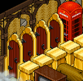
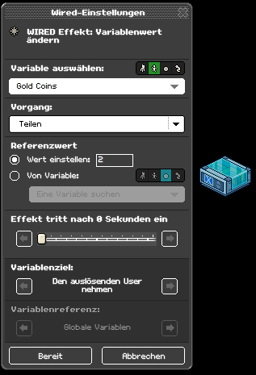
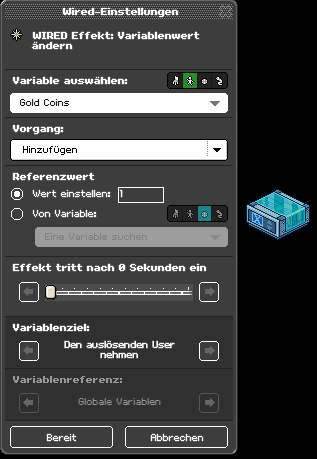
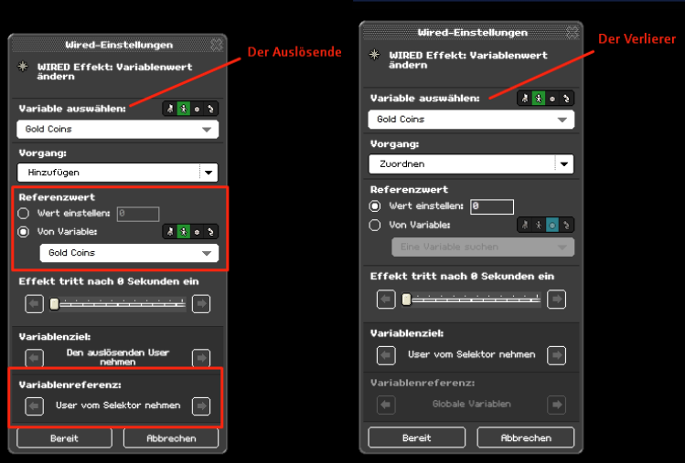

Wired Artikel
Variable-Infos - (Deutsch)
Der nachfolgende Artikel wurde von surab1996 überwiegend mithilfe der Künstlichen Intelligenz ChatGPT übersetzt. Der eigentliche Autor ist der Wired-Staff sirjonasxx, der in der Ich-Perspektive spricht. Viel Spaß!
Kapitel 1: Einführung – Was sind Variablen?
einfach
Hallo zusammen!
WIRED Variablen sind da – und sie sind das bisher fortschrittlichste Konzept in Wired.
Aus diesem Grund werde ich einen Beitrag über alles schreiben, was ihr wissen müsst! Das umfasst alles von den Grundlagen bis hin zu den fortgeschritteneren Aspekten. (Ich werde die Beiträge mit ihren jeweiligen Schwierigkeitsgraden kennzeichnen).
Was sind sie also und warum brauchen wir sie? Ich werde dies in 5 Abschnitten zusammenfassen – bleibt dran!
WIRED Variablen sind da – und sie sind das bisher fortschrittlichste Konzept in Wired.
Aus diesem Grund werde ich einen Beitrag über alles schreiben, was ihr wissen müsst! Das umfasst alles von den Grundlagen bis hin zu den fortgeschritteneren Aspekten. (Ich werde die Beiträge mit ihren jeweiligen Schwierigkeitsgraden kennzeichnen).
Was sind sie also und warum brauchen wir sie? Ich werde dies in 5 Abschnitten zusammenfassen – bleibt dran!
1. Speicherung von Werten
Vielleicht habt ihr meine Ankündigung zu Beginn des Jahres gelesen: https://discord.com/channels/978410780972159017/1018510470581325924/1191215123319242882. Dort bezeichne ich WIRED Variablen als das letzte Puzzleteil, das den Abschnitt „Wired als Programmiersprache“ des Wired-Projekts vervollständigt.
Wie in der Programmierung benötigt ihr Variablen, um den Zustand eures Spiels zu verwalten. In Habbo haben wir diesen Bedarf bisher dadurch umgangen, dass wir sehr kreativ vorgegangen sind, wie wir Wired umsetzen – viele von euch haben sicherlich Kerzen und deren „An“- und „Aus“-Zustand oder Farb- bzw. Zahlentafeln genutzt, um bestimmte Dinge zu verfolgen. Viele von euch haben vielleicht auch Teamhelme oder Handitems verwendet, um das Wired-System dazu zu bringen, sich an bestimmte Dinge zu erinnern.
Das funktioniert zwar gut, bis man an gewisse Grenzen stößt. Zum Beispiel: Was passiert, wenn ihr in einem Raum vier Objekte finden müsst, um in die nächste Ebene zu gelangen? Alle Labyrinthe, die ein solches System benötigen, nutzen Tore – und sobald diese alle geöffnet sind, könnt ihr ins nächste Level wechseln.
Wie in der Programmierung benötigt ihr Variablen, um den Zustand eures Spiels zu verwalten. In Habbo haben wir diesen Bedarf bisher dadurch umgangen, dass wir sehr kreativ vorgegangen sind, wie wir Wired umsetzen – viele von euch haben sicherlich Kerzen und deren „An“- und „Aus“-Zustand oder Farb- bzw. Zahlentafeln genutzt, um bestimmte Dinge zu verfolgen. Viele von euch haben vielleicht auch Teamhelme oder Handitems verwendet, um das Wired-System dazu zu bringen, sich an bestimmte Dinge zu erinnern.
Das funktioniert zwar gut, bis man an gewisse Grenzen stößt. Zum Beispiel: Was passiert, wenn ihr in einem Raum vier Objekte finden müsst, um in die nächste Ebene zu gelangen? Alle Labyrinthe, die ein solches System benötigen, nutzen Tore – und sobald diese alle geöffnet sind, könnt ihr ins nächste Level wechseln.

4 Tore, die in Labys nacheinander geöffnet werden
Das wird problematisch, wenn sich viele Nutzer im Raum befinden und sie einfach das Level abschließen können, sobald ein anderer Nutzer das Spiel gelöst hat. Bei Wired brauchen wir eine Methode, damit das System Kenntnisse über Nutzer und Möbel besitzt. Wir möchten benutzerdefinierte Informationen speichern, wie zum Beispiel Hat dieser Nutzer Objekt X gefunden? Wie viele Leben hat der Nutzer noch übrig? und Wie viele Cookies hat der Spieler gesammelt?
Bisher waren wir stark eingeschränkt in dem, was wir erstellen konnten, da uns ein Wired-System für die Speicherung fehlte.
Jetzt nicht mehr! Keine Teamhelme mehr, keine Handitems mehr – wir haben jetzt native Unterstützung.
2. Spielfortschritt
Es gibt zwei verschiedene Arten der „Speicherung“: eine temporäre Speicherung und eine permanente Speicherung. Im vorherigen Kapitel habe ich hauptsächlich über die temporäre Speicherung gesprochen – aber wir brauchen mehr! Das beste Beispiel dafür, wo wir heute bereits permanente Speicherung benötigen, sind Checkpoints in Spielen. Derzeit umgehen wir dieses Problem, indem wir Gruppenmitgliedschaften und Abzeichenbesitz in offiziellen Spielen nutzen. Doch das ist das Maximum, das wir bisher erreichen können – und natürlich reicht das nicht aus! Noch schlimmer ist, dass das Wired-System hierbei nicht einmal die Kontrolle hat. Wir wollen Spiele erstellen, in denen das Wired-System sich noch an den Nutzer erinnert, wenn er den Raum erneut betritt. Das eröffnet viele neue Möglichkeiten für innovative Spiele, wie z. B. RPGs, in denen man mit der Zeit Level und Reichtum anhäufen kann.
3. Ein vernetztes Spiel – Raumkommunikation
Wir führen ein Konzept ein, das es ermöglicht, diese „Variablen“ zwischen Räumen zu teilen. Dadurch können wir Spiele erschaffen, die sich über mehrere Räume erstrecken, wobei Aktionen aus einem früheren Raum das Spiel in einer späteren Phase beeinflussen können. Die Möglichkeiten für RPGs sind grenzenlos! Job Agenturen werden in der Lage sein, ihr internes Rangsystem in einer Wired-Variablen zu speichern und es in all ihren verbundenen Räumen abzurufen.
Ich werde in einem separaten Beitrag noch tiefer in dieses Thema eintauchen!
Ich werde in einem separaten Beitrag noch tiefer in dieses Thema eintauchen!
4. Mathematik
Mit dem Variablen-Update wird Mathematik zu einem integralen Bestandteil von Wired. Du kannst einer Variablen eine Zahl hinzufügen oder subtrahieren oder sogar auf eine andere Variable verweisen, um komplexere Berechnungen durchzuführen.
5. Die Integration von allem
Bei Variablen dreht sich alles um … Zahlen! Und weißt du, was ebenfalls Zahlen hat? Uhh … Erfolgspunkte, Benutzerlevel, Positionen im Raum, die Raum-ID … und noch vieles mehr! Du musst die Details dazu noch nicht kennen, da dies in einem der fortgeschritteneren Kapitel behandelt wird.
Aber das ist nicht alles – wir können WIRED Variablen nutzen, um viele Habbo-Mechaniken in Wired zu integrieren, beispielsweise Quest-Fortschritt und Erfolgsfortschritt. Variablen fungieren als Vermittler zwischen Wired und einer Vielzahl bestehender Habbo-Funktionen.
Aber das ist nicht alles – wir können WIRED Variablen nutzen, um viele Habbo-Mechaniken in Wired zu integrieren, beispielsweise Quest-Fortschritt und Erfolgsfortschritt. Variablen fungieren als Vermittler zwischen Wired und einer Vielzahl bestehender Habbo-Funktionen.
Kapitel 2: Die Grundlagen – Wie benutzt man eine WIRED-Variable
einfach
Wenn du das vorherige Kapitel gelesen hast, weißt du nun, was Variablen sind und warum wir sie brauchen. Aber du weißt noch nicht, wie sie in Habbo verwendet werden.
In diesem Beitrag werde ich die absoluten Grundlagen erklären – also bleib dran!
Zunächst einmal gibt es aktuell fünf verschiedene Arten von WIRED-Variablen in Habbo:
In diesem Beitrag werde ich die absoluten Grundlagen erklären – also bleib dran!
Zunächst einmal gibt es aktuell fünf verschiedene Arten von WIRED-Variablen in Habbo:
🔵 WIRED Variable: Globale Variable
🟡 WIRED Variable: Möbel-Variable
🟢 WIRED Variable: User-Variable
🟠 WIRED Variable: Kontext-Variable
🟣 WIRED Variable: Aus einem anderen Raum
Doch um die Grundlagen zu erklären, vergessen wir erst einmal alle – außer 🟢 WIRED Variable: User-Variable.
Das einfachste Beispiel
Betrachten wir ein bestehendes Problem in Wired: Du musst wissen, ob ein Benutzer einen Checkpoint erreicht hat.
Dafür platzieren wir eine neue WIRED Variable: User-Variable im Raum und nennen sie checkpoint.
Wir setzen die Verfügbarkeit auf „Dauerhaft“. Dadurch teilen wir dem Wired-System mit, dass der Benutzer diese Variable behalten soll, wenn er das nächste Mal den Raum betritt.
Dafür platzieren wir eine neue WIRED Variable: User-Variable im Raum und nennen sie checkpoint.
Wir setzen die Verfügbarkeit auf „Dauerhaft“. Dadurch teilen wir dem Wired-System mit, dass der Benutzer diese Variable behalten soll, wenn er das nächste Mal den Raum betritt.
Wenn der Benutzer den Checkpoint erreicht, gib ihm die Variable mit WIRED Effekt: Variable geben, indem du die Checkpoint-Variable auswählst, die jetzt im Dropdown-Menü sichtbar ist.
Wenn der Benutzer den Raum erneut betritt, kannst du überprüfen, ob er den Checkpoint zuvor erreicht hat, indem du prüfst, ob er die Variable besitzt. Verwende dazu WIRED Bedingung: Hat Variable und wähle erneut Checkpoint aus.
Natürlich gibt es diese Bedingung auch in einer negativen Variante.
Einfacher geht’s kaum, oder?!
Vielleicht möchtest du, dass der Benutzer am Ende deines Spiels nicht einfach wieder zum Checkpoint springen kann und stattdessen sein Fortschritt zurückgesetzt wird. Kein Problem! Verwende WIRED Effekt: Variable entfernen, um die Variable wieder zu löschen.
Das war’s! Aber wenn du genau auf die Benutzeroberfläche geachtet hast, ist dir vielleicht aufgefallen, dass das Wort „Wert“ zweimal auftaucht. Was bedeutet das und wie können wir es nutzen? Lies das nächste Kapitel, um alles darüber zu erfahren!
Kapitel 3: Die Grundlagen – Variablenwerte
mittel
Nachdem du das vorherige Kapitel gelesen hast, solltest du verstehen, was die folgenden WIRED-Boxen bewirken:
Wir haben diese WIRED-Boxen verwendet, um zu überprüfen, ob ein Benutzer einen Checkpoint erreicht hat. Das ist eine sehr einfache Gleichung: Entweder hat der Benutzer ihn erreicht oder nicht. Aber was, wenn wir fortgeschrittenere Werte speichern wollen?
Betrachte ein neues Beispiel: Du hast ein Spiel, in dem der Benutzer Goldmünzen sammeln muss. Ein Spieler beginnt mit 0 Münzen und gewinnt, wenn er mehr als 500 Goldmünzen gesammelt hat, bevor der Timer abläuft.
Lass uns die Lösung dieser Aufgabe erkunden und dabei 3 weitere WIRED-Boxen kennenlernen:
- WIRED Variable: User-Variable
- WIRED Effekt: Variable geben
- WIRED Effekt: Variable entfernen
- WIRED Bedingung: Hat Variable
- WIRED Negative Bedingung: Hat keine Variable
Wir haben diese WIRED-Boxen verwendet, um zu überprüfen, ob ein Benutzer einen Checkpoint erreicht hat. Das ist eine sehr einfache Gleichung: Entweder hat der Benutzer ihn erreicht oder nicht. Aber was, wenn wir fortgeschrittenere Werte speichern wollen?
Betrachte ein neues Beispiel: Du hast ein Spiel, in dem der Benutzer Goldmünzen sammeln muss. Ein Spieler beginnt mit 0 Münzen und gewinnt, wenn er mehr als 500 Goldmünzen gesammelt hat, bevor der Timer abläuft.
Lass uns die Lösung dieser Aufgabe erkunden und dabei 3 weitere WIRED-Boxen kennenlernen:
- WIRED Bedingung: Variablenwert
- WIRED Auslöser: geänderte Variable
- WIRED Effekt: Variablenwert ändern
Lass uns eine neue WIRED Variable: User-Variable im Raum platzieren. Dieses Mal benennen wir sie gold_coins und möchten eine Zahl zusammen mit dieser Variable speichern. Dafür wähle das Kontrollkästchen Hat Wert aus.
Wenn das Spiel beginnt, sollen alle Nutzer mit 0 Goldmünzen starten. Wir können jetzt einen Ausgangswert im WIRED Effekt: Variable geben festlegen – das war im vorherigen Kapitel noch nicht möglich. Setzen wir ihn auf 0.
Ich habe auch Bestehende Variable aufheben ausgewählt. So wird sichergestellt, dass niemand seine Münzen vom vorherigen Spiel ins aktuelle Spiel übernimmt und jeder mit einer frischen Variable startet. Falls der Benutzer bereits Goldmünzen hatte und diese Option nicht ausgewählt wäre, hätte der WIRED-Effekt nichts bewirkt.
Jetzt können wir verschiedene Spielmechaniken einbauen, um die Anzahl der Münzen eines Benutzers zu verändern.
Hier sind einige Beispiele:
- Wenn der Benutzer neben einem Dieb läuft, wird die Anzahl der Goldmünzen durch 2 geteilt.
- Wenn der Benutzer eine Goldmünze findet, erhält er 1 Goldmünze.
- Wenn der Benutzer neben einem anderen Spieler steht und :steal sagt, stiehlt er alle Münzen des anderen Spielers. Der andere Spieler verliert all seine Münzen.

1. Durch zwei teilen

2. Erhält eine Münze

3. Dieb stiehlt alle Münzen des anderen Spielers
Der Spieler gewinnt, wenn er mehr als 500 Goldmünzen gesammelt hat. Lass uns das umsetzen!
Platziere einen WIRED Auslöser: geänderte Variable, wähle die Variable Gold Coins aus und aktiviere „Auslösen, wenn Variable = Wert geändert“.
Das erklärt die Grundlagen der Variablenwerte.
Probier es einfach selbst aus und experimentiere ein wenig damit! Falls etwas unklar ist, kannst du jederzeit im Discord Kanal Help um Hilfe fragen.
Kapitel 4: Die Grundlagen – Möbel-, Benutzer- & Globale Variablen
mittel
Bisher haben wir nur über die WIRED Variable: User-Variable gesprochen. Wusstest du, dass User-Variablen auch Haustieren und Bots zugewiesen werden können? Du wirst dich freuen zu hören, dass es noch vier weitere Variablen-Typen gibt! Zwei der einfacheren Varianten sehen wir uns hier genauer an.
WIRED Variable: Möbel-Variable
Alles in WIRED basiert auf der Synergie zwischen Möbeln und Benutzern – und das gilt auch für Variablen!
Genau wie Benutzer können Möbel Werte speichern. Diese Werte können entweder temporär oder permanent sein, je nachdem, wofür du sie nutzen möchtest. Möbel-Variablen können sowohl Bodenmöbeln als auch Wandobjekten zugewiesen werden.
Genau wie Benutzer können Möbel Werte speichern. Diese Werte können entweder temporär oder permanent sein, je nachdem, wofür du sie nutzen möchtest. Möbel-Variablen können sowohl Bodenmöbeln als auch Wandobjekten zugewiesen werden.
Hier ist ein einfaches Anwendungsbeispiel für Möbel-Variablen:
Stell dir ein Spiel vor, in dem du Möbel bewegen kannst, indem du darauf klickst (WIRED Auslöser: User klickt Möbel) und anschließend auf ein Feld klickst (WIRED Auslöser: User klickt auf Fliese), um das Möbelstück an die gewünschte Position zu verschieben. Das Problem ist: Wie weiß das WIRED-System, welches Möbelstück ausgewählt wurde? Ganz einfach! Verwende WIRED Variable: Möbel-Variable mit dem Namen is_selected und setze dann WIRED Effekt: Variable geben ein, sobald der Benutzer auf ein Möbelstück klickt. Jetzt weiß das WIRED-System, welches Möbelstück bewegt werden soll, wenn eine Bodenfliese angeklickt wird.
Um eine Möbel-Variable in einem variablenbezogenen WIRED-Element auszuwählen, musst du angeben, dass du mit Möbeln arbeitest und nicht mit Benutzern. In den WIRED-Feldern, die mit Variablen arbeiten, findest du diese Option direkt neben dem Variablen-Auswahlfeld.
Ansonsten gibt es nicht viel Neues im Vergleich zu Benutzer-Variablen – Möbel-Variablen und Benutzer-Variablen funktionieren auf die gleiche Weise.
WIRED Variable: Globale Variable
- Möbel-Variablen gehören zu Möbeln.
- User-Variablen gehören zu Benutzern.
- Globale Variablen gehören zu … dem Raum!
Sie unterscheiden sich darin, dass sie nur einmal existieren können und immer vorhanden sind.
Sobald eine globale Variable erstellt wird, gehört sie dem Raum und wird automatisch mit dem Wert 0 initialisiert. Dieser Wert kann in der WIRED-Variablen-Oberfläche eingesehen werden. Das bedeutet auch, dass sie nicht mit „WIRED Effekt: Variable geben“ oder „WIRED Effekt: Variable entfernen“ zugewiesen oder verworfen werden kann.
Um eine globale Variable in einem variablenbezogenen WIRED-Element auszuwählen, musst du angeben, dass du mit globalen Variablen arbeitest. Diese Option befindet sich direkt neben dem Variablen-Auswahlfeld.
Beispielhafte Anwendungsfälle für globale Variablen sind:
- Verfolgung der Anzahl der Gewinner in einem Spiel
- Speicherung von Raumkonfigurationen (z. B. ob es Tag oder Nacht ist)
- Verwaltung des Spielzustands
- Echtzeit-Kommunikation mit anderen Räumen (mehr dazu später!)
Kapitel 5: Die Grundlagen – Ins Habboversum eintauchen
einfach
In einer Welt nach COVID mag niemand mehr Isolation. Gute Nachrichten: Du kannst deine Variablen von einem Raum in einen anderen mitnehmen und dort verwenden! Du kannst sie sogar mit deinen Freunden teilen. Lies hier alles darüber!
Zeit für einen Game-Changer! Wenn du genau aufgepasst hast, ist dir vielleicht eine Option in WIRED Variable: User-Variable und WIRED Variable: Globale Variable aufgefallen, die es ermöglicht, die Variable raumübergreifend zu teilen.
WIRED Variable: Aus einem anderen Raum
Wenn du dieses WIRED-Element öffnest, kannst du einen Raum auswählen – die Liste zeigt allerdings nur Räume an, die permanente, geteilte Variablen in deinen eigenen Räumen enthalten. Sobald du einen Raum ausgewählt hast, kannst du die Variable auswählen, die du im neuen Raum verwenden möchtest. Erlaubt sind nur Globale und Benutzer-Variablen.
Nachdem du das WIRED-Element eingerichtet hast, verhält sich die Variable wie jede andere Variable, die nicht zwischen mehreren Räumen geteilt wird.
Wichtige Hinweise:
- Wenn eine globale, geteilte Variable in einem Raum geändert wird, wird in allen anderen Räumen, die diese Variable verwenden, der WIRED Auslöser: geänderte Variable aktiviert. Dies kann genutzt werden, um eine Raum-übergreifende Kommunikation zu ermöglichen.
- Diese WIRED-Box kann nur vom Besitzer der WIRED-Box konfiguriert werden.
- Du kannst deine eigene WIRED-Box in einem Gruppenraum eines Freundes platzieren, falls du möchtest, dass dein Freund Zugriff auf die Variableninhalte hat.
- Besonders in Gruppenräumen solltest du die „Schreibgeschützt“-Option (Read-only) aktivieren, wenn du nicht möchtest, dass dieser Raum die Variablen verändert, entfernt oder neue Werte hinzufügt.
Beispiel: In Job Agenturen könnten Mitarbeiter Zugriff auf das Rangsystem haben, jedoch nicht berechtigt sein, es zu verändern.
Kapitel 6: Die Grundlagen – Variablen-Selektoren & Filter
mittel
Heutzutage ist WIRED ohne Selektoren kaum noch vorstellbar – und sie sind auch für Variablen unverzichtbar.
WIRED-Selektor: Möbel/User mit Variable
Dieser Selektor wählt alle Möbel oder Benutzer im Raum aus, die eine bestimmte Variable besitzen.
Wenn die Variable so konfiguriert ist, dass sie einen Wert hat, kannst du zusätzliche Bedingungen festlegen – genau wie bei WIRED Bedingung: Variablenwert.
Wenn die Variable so konfiguriert ist, dass sie einen Wert hat, kannst du zusätzliche Bedingungen festlegen – genau wie bei WIRED Bedingung: Variablenwert.
WIRED-Filter: Möbel-/User-Variablenfilter
Vor diesem Update gab es zwei WIRED-Filter im Spiel – jetzt fügen wir zwei weitere hinzu! Anstatt X zufällige Möbel/Benutzer aus dem Selektor auszuwählen, wählen die Variablenfilter die X Möbel/Benutzer mit dem höchsten oder niedrigsten Wert für eine bestimmte Variable aus.
Anwendungsbeispiele:
Anwendungsbeispiele:
- Auswahl des Benutzers mit der höchsten Punktzahl
- Auswahl der 5 Benutzer, die am Ende eines Spiels die wenigsten Goldmünzen gesammelt haben
Vielleicht hast du bemerkt, dass es noch weitere Optionen gibt außer „niedrigster/höchster Wert“!
Lies das nächste Kapitel, um mehr darüber zu erfahren!
Lies das nächste Kapitel, um mehr darüber zu erfahren!
Kapitel 7: Die Grundlagen – Variablenalter (Variable Age)
mittel
Wir wissen, dass Variablen optional Werte haben können – aber zusätzlich speichern sie auch die Zeit! Lies hier weiter, um mehr darüber zu erfahren.
Tatsächlich kann eine Variable drei Eigenschaften haben:
- Den Wert
- Die Erstellungszeit
- Die Zeit der letzten Aktualisierung
WIRED Bedingung: Variablenalter
Mit dieser WIRED-Box kannst du prüfen, wann eine Variable erstellt (= vergeben) und wann sie zuletzt aktualisiert wurde. Betrachten wir das Agentur-Beispiel: Du könntest überprüfen, ob ein Benutzer in den letzten 5 Tagen eine Beförderung erhalten hat.
Ähnlich dazu würde die Verwendung von „Erstellungszeit“ überprüfen, wann ein Benutzer der Agentur beigetreten ist, anstatt wann er zuletzt befördert wurde. Im WIRED Filter: User-/Möbel-Variablenfilter können wir auch nach diesen Werten sortieren.
Beispiele:
Beispiele:
- Auswahl der Benutzer, die am längsten keine Beförderung mehr erhalten haben
- Auswahl der neuesten Benutzer
Kapitel 8: Extra – Nützliche Werkzeuge
einfach
schwer
Die Einführung der Variablen bringt den Bedarf an einer neuen Reihe von WIRED-Boxen mit sich – nicht speziell für Variablen, aber dennoch entweder notwendig oder sinnvoll in Verbindung mit diesem Update. In diesem Beitrag stelle ich dir alle Neuerungen vor und erkläre, warum sie für dieses Release relevant sind! Der Schwierigkeitsgrad dieses Beitrags reicht von einfach bis schwierig – ab der Hälfte wird in einer Hinweisbox darauf hingewiesen.
WIRED Effekt: Benutzer bewegen und drehen
Diese WIRED-Box ist das Gegenstück für Benutzer zu „WIRED-Effekt: Möbel bewegen und drehen“. Der Grund, warum sie im Rahmen des Utility-Updates für Variablen erscheint, liegt darin, dass Benutzerposition und -drehung ebenfalls über Variablen steuerbar sind. (Siehe dazu auch die internen Variablen, nachdem du diesen Abschnitt gelesen hast.)
Es war mir wichtig, dass diese Funktion nativ unterstützt wird, bevor wir mit variablenbasierter Steuerung weitermachen.
Es war mir wichtig, dass diese Funktion nativ unterstützt wird, bevor wir mit variablenbasierter Steuerung weitermachen.
WIRED Effekt: Benutzer zu Möbel bewegen
Diese Box ist das „Benutzer zu Möbel“-Gegenstück zu „WIRED Effekt: Möbel zu User bewegen“.
Sie erscheint aus demselben Grund wie die vorherige Box!
Sie erscheint aus demselben Grund wie die vorherige Box!
WIRED Selektor: Remote-Auswahl
Ein zentrales Ziel des WIRED-Projekts ist es, Möbel- und WIRED-Duplikate so weit wie möglich zu vermeiden. WIRED-Selektoren haben dabei mehr geholfen als alles andere – ironischerweise gibt es aber immer noch viele Anwendungsfälle, in denen man einen WIRED-Selektor-Stapel duplizieren muss. Mit dem „WIRED Selektor: Fernauswahl“ kannst du nun einen bestehenden Selektor-Stapel mehrfach wiederverwenden, und das mit nur einer einzigen WIRED-Box.
Hinweis: Dieser Selektor funktioniert für alle Objekttypen (Möbel und Benutzer) – im Gegensatz zu anderen Selektoren.
Hinweis: Dieser Selektor funktioniert für alle Objekttypen (Möbel und Benutzer) – im Gegensatz zu anderen Selektoren.
Hier ein Beispiel:
Ich habe zwei WIRED-Stapel, die jeweils einen Effekt auf eine einzelne Zahlenfliese (≠ 0) im Spielfeld ausführen sollen.
Anstatt die Selektoren in beiden Stapeln zu duplizieren, habe ich „WIRED Selektor: Fernauswahl“ verwendet.
Es reicht, vom Ziel-Stapel beliebige Wireds auszuwählen – genauso wie bei „WIRED Effekt: Wired-Stapel ausführen“.
Ich habe zwei WIRED-Stapel, die jeweils einen Effekt auf eine einzelne Zahlenfliese (≠ 0) im Spielfeld ausführen sollen.
Anstatt die Selektoren in beiden Stapeln zu duplizieren, habe ich „WIRED Selektor: Fernauswahl“ verwendet.
Es reicht, vom Ziel-Stapel beliebige Wireds auszuwählen – genauso wie bei „WIRED Effekt: Wired-Stapel ausführen“.
Hinweis für Leser: Ab diesem Punkt steigt der Schwierigkeitsgrad dieses Beitrags auf „schwierig“.
Du wirst im Selektor mehrere zusätzliche Optionen sehen. In den meisten Fällen kannst du sie auf den Standardwerten belassen – und die Box wird genau das tun, was du erwartest.
Auswahltyp
Die Standardoption ist Verbindung.
Das bedeutet: Wenn mehrere Remote-Stapel ausgewählt sind (z. B. Stapel 1 wählt 10 Möbel und Stapel 2 wählt 20 andere Möbel), besteht die resultierende Auswahl aus der Kombination beider Stapel (also 30 Möbel).
Alternativ kannst du Schnittpunkt auswählen.
Dann werden nur die Benutzer/Möbel ausgewählt, die in allen ausgewählten Remote-Stapeln gleichzeitig enthalten sind.
Beispiel:
Zusatzoption: Anzahl der Stapel filtern
Wenn du z. B. 5 Remote-Stapel ausgewählt hast, kannst du festlegen, nicht alle 5 zu verwenden, sondern stattdessen zufällig X Stapel daraus auszuwählen.
Auswahltyp
Die Standardoption ist Verbindung.
Das bedeutet: Wenn mehrere Remote-Stapel ausgewählt sind (z. B. Stapel 1 wählt 10 Möbel und Stapel 2 wählt 20 andere Möbel), besteht die resultierende Auswahl aus der Kombination beider Stapel (also 30 Möbel).
Alternativ kannst du Schnittpunkt auswählen.
Dann werden nur die Benutzer/Möbel ausgewählt, die in allen ausgewählten Remote-Stapeln gleichzeitig enthalten sind.
Beispiel:
- Stapel 1 wählt A & B & C
- Stapel 2 wählt B & C & D
→ die resultierende Auswahl ist: B & C
Zusatzoption: Anzahl der Stapel filtern
Wenn du z. B. 5 Remote-Stapel ausgewählt hast, kannst du festlegen, nicht alle 5 zu verwenden, sondern stattdessen zufällig X Stapel daraus auszuwählen.
WIRED-Auslöser: Benutzer verlässt Raum
Diese Box wird ausgelöst, wenn ein Benutzer den Raum verlässt. Sie unterstützt dabei auch Bots und Haustiere – genau wie Benutzer-Variablen. Neben der Tatsache, dass diese WIRED-Box sehr oft gewünscht wurde, wird sie durch die Einführung der Variablen praktisch unverzichtbar. Durch interne Variablen kannst du Möbel sehr einfach auf Benutzer verweisen (und umgekehrt). Daher ist es für dich als WIRED-Ersteller entscheidend, die Möglichkeit zu haben, diese Referenzen auch wieder zu entfernen – etwa wenn ein Benutzer den Raum verlässt.
Du siehst hier ein Beispiel dafür, wie das in der Praxis umgesetzt wird (du musst den WIRED-Aufbau dafür nicht verstehen).
Beachte, dass die Variablen gelöscht werden, sobald ein Benutzer die Spielarena oder den Raum verlässt.
Beachte, dass die Variablen gelöscht werden, sobald ein Benutzer die Spielarena oder den Raum verlässt.
Wichtiger Hinweis
Wenn ein „WIRED Auslöser: Benutzer verlässt Raum“ ausgelöst wird, sind die WIRED-Variablen dieses Benutzers nur für sehr kurze Zeit verfügbar. Zu diesem Zeitpunkt können sie nicht mehr verändert werden – sie werden zu sogenannten „Schattenvariablen“. Wenn du versuchst, sie noch zu ändern (z. B. bei permanenten Variablen), werden die Änderungen nicht mehr in der Datenbank gespeichert. Das ist so beabsichtigt, da sich der Benutzer zu diesem Zeitpunkt möglicherweise bereits im nächsten Raum befindet. Du kannst nur noch auslesen, nicht mehr schreiben – ich empfehle, diesen Auslöser nur für Aufräumprozesse zu verwenden. Diese „Schattenvariablen“ bleiben außerdem für die gesamte Signal-Kette (oder andere rekursiv ausgelöste WIRED-Aktionen) verfügbar – ausgenommen davon sind verzögerte WIRED-Abläufe.
Wenn ein „WIRED Auslöser: Benutzer verlässt Raum“ ausgelöst wird, sind die WIRED-Variablen dieses Benutzers nur für sehr kurze Zeit verfügbar. Zu diesem Zeitpunkt können sie nicht mehr verändert werden – sie werden zu sogenannten „Schattenvariablen“. Wenn du versuchst, sie noch zu ändern (z. B. bei permanenten Variablen), werden die Änderungen nicht mehr in der Datenbank gespeichert. Das ist so beabsichtigt, da sich der Benutzer zu diesem Zeitpunkt möglicherweise bereits im nächsten Raum befindet. Du kannst nur noch auslesen, nicht mehr schreiben – ich empfehle, diesen Auslöser nur für Aufräumprozesse zu verwenden. Diese „Schattenvariablen“ bleiben außerdem für die gesamte Signal-Kette (oder andere rekursiv ausgelöste WIRED-Aktionen) verfügbar – ausgenommen davon sind verzögerte WIRED-Abläufe.
WIRED Extra: Ausführung in Reihenfolge
Wenn ein WIRED-Stapel normalerweise ausgelöst wird, werden alle Effekte gleichzeitig ausgeführt. Dadurch entsteht ein stabiles WIRED-System:
Als WIRED-Ersteller konnte man dieses Verhalten bisher nur durch verkettete Signal-Stapel umgehen.
Aber die Anwendungsfälle waren bislang zu speziell, um ein neues Extra zu rechtfertigen – bis jetzt!
Gerade bei Variablen (und speziell bei mathematischen Operationen) ist es üblich, Schritte in einer bestimmten Reihenfolge auszuführen. Beispiel: Du willst eine Variable kopieren, sie mathematisch verändern und danach mit dem Ergebnis etwas machen – alles in einem einzigen WIRED-Stapel. Das ist jetzt möglich:
Du kannst „WIRED Extra: Ausführung in Reihenfolge“ zu einem Stapel hinzufügen – und die Effekte werden dann von unten nach oben abgearbeitet.
- Effekte werden zusammengeführt (z. B. führt das doppelte Bewegen desselben Möbelstücks zu einer einzigen Bewegung)
- Widersprüchliche Effekte (z. B. Benutzer gleichzeitig zu Möbel X und Y teleportieren) haben ein zufälliges Ergebnis
- WIRED-Einstellungen brechen nie, wenn sie verschoben werden – Reihenfolgen spielen keine Rolle
- Verschiedene Arten von Effekten werden immer in einer festgelegten Reihenfolge ausgeführt
(z. B. „Team verlassen“ erfolgt immer nach „Team beitreten“, wenn beides gleichzeitig passiert – so ist sichergestellt, dass der Benutzer am Ende nicht in einem Team ist) - Ältere Spiele (vor dem WIRED-Update) funktionieren weiterhin wie beabsichtigt
Als WIRED-Ersteller konnte man dieses Verhalten bisher nur durch verkettete Signal-Stapel umgehen.
Aber die Anwendungsfälle waren bislang zu speziell, um ein neues Extra zu rechtfertigen – bis jetzt!
Gerade bei Variablen (und speziell bei mathematischen Operationen) ist es üblich, Schritte in einer bestimmten Reihenfolge auszuführen. Beispiel: Du willst eine Variable kopieren, sie mathematisch verändern und danach mit dem Ergebnis etwas machen – alles in einem einzigen WIRED-Stapel. Das ist jetzt möglich:
Du kannst „WIRED Extra: Ausführung in Reihenfolge“ zu einem Stapel hinzufügen – und die Effekte werden dann von unten nach oben abgearbeitet.
Beachte dieses Beispiel:
Wenn das Extra dem Stapel hinzugefügt wird, erfolgen die Möbelbewegungen immer in einer bestimmten Reihenfolge.
Das Ergebnis: Der Leuchtball erreicht zuverlässig das Ende des Pfads (oben, oben, rechts, oben, oben).
Entfernt man das Extra jedoch, werden die Bewegungen des Leuchtballs in zufälliger Reihenfolge ausgeführt –
dadurch wird es fast unmöglich, das Ende des Pfads zu erreichen.
Wenn das Extra dem Stapel hinzugefügt wird, erfolgen die Möbelbewegungen immer in einer bestimmten Reihenfolge.
Das Ergebnis: Der Leuchtball erreicht zuverlässig das Ende des Pfads (oben, oben, rechts, oben, oben).
Entfernt man das Extra jedoch, werden die Bewegungen des Leuchtballs in zufälliger Reihenfolge ausgeführt –
dadurch wird es fast unmöglich, das Ende des Pfads zu erreichen.
Beachte: Das Extra funktioniert zum Zeitpunkt dieses Textes nicht gut mit „WIRED Effekt: Nachricht anzeigen“ –
die Nachrichten werden nicht in der richtigen Reihenfolge angezeigt.
die Nachrichten werden nicht in der richtigen Reihenfolge angezeigt.
Kapitel 9: Interne Variablen - Einführung & Überblick
mittel
WIRED-Variablen enden nicht bei den selbst erstellten Variablen – auch die Umgebung kann Variablen erzeugen. Aktuell gibt es eine Art solcher Variablen: Interne Variablen.
Interne Variablen bilden eine Schnittstelle zwischen WIRED und den internen Systemen von Habbo – also allem, was mit Möbeln, Benutzern, Räumen und dem Ablauf von WIRED-Aktionen zu tun hat (Kontext-Variablen – dazu später mehr). Einige dieser internen Variablen tragen noch gewisse technische Altlasten, da Habbo ein älteres Spiel ist.
Doch auch wenn sie technisch wirken, sind sie extrem mächtig für den Einsatz in WIRED-Spielen. WIRED hat nun Zugriff auf insgesamt 61 interne Variablen – Funktionen, für die früher neue WIRED-Bedingungen oder eigene Extras nötig gewesen wären. Interne Variablen sind im Grunde das Äquivalent zu einem ganzen Bündel WIRED-Funktionen – vereint in einem einzigen System.
Interne Variablen bilden eine Schnittstelle zwischen WIRED und den internen Systemen von Habbo – also allem, was mit Möbeln, Benutzern, Räumen und dem Ablauf von WIRED-Aktionen zu tun hat (Kontext-Variablen – dazu später mehr). Einige dieser internen Variablen tragen noch gewisse technische Altlasten, da Habbo ein älteres Spiel ist.
Doch auch wenn sie technisch wirken, sind sie extrem mächtig für den Einsatz in WIRED-Spielen. WIRED hat nun Zugriff auf insgesamt 61 interne Variablen – Funktionen, für die früher neue WIRED-Bedingungen oder eigene Extras nötig gewesen wären. Interne Variablen sind im Grunde das Äquivalent zu einem ganzen Bündel WIRED-Funktionen – vereint in einem einzigen System.
Um interne Variablen zu verwenden, klicke im Variablen-Auswahlfeld auf interne Variablen. Wie überall siehst du dort nur die Variablen aktiv, die für den jeweiligen Anwendungsfall relevant sind.
Beispiel:
In „WIRED Bedingung: Benutzer hat Variable“ werden dir die optionalen Variablen als aktiv angezeigt. Wenn ein Benutzer eine Variable immer besitzt (wie z. B. den Benutzerlevel), kannst du nicht prüfen, ob sie überhaupt existiert.
Ein weiteres Beispiel:
In „WIRED Effekt: Variablenwert ändern“ werden dir nur die interne Variablen als aktiv angezeigt, die einen Wert besitzen und schreibbar sind. Die meisten internen Variablen sind jedoch nur lesbar.
Beispiel:
In „WIRED Bedingung: Benutzer hat Variable“ werden dir die optionalen Variablen als aktiv angezeigt. Wenn ein Benutzer eine Variable immer besitzt (wie z. B. den Benutzerlevel), kannst du nicht prüfen, ob sie überhaupt existiert.
Ein weiteres Beispiel:
In „WIRED Effekt: Variablenwert ändern“ werden dir nur die interne Variablen als aktiv angezeigt, die einen Wert besitzen und schreibbar sind. Die meisten internen Variablen sind jedoch nur lesbar.
In diesem Beitrag gebe ich dir einen Überblick über alle internen Variablen, die derzeit verfügbar sind. Diese Liste wird in Zukunft weiter wachsen. Einige Variablen erhalten eine kurze Erklärung direkt in der Übersicht. Variablen, die eine längere Erläuterung benötigen, werden in einem separaten Beitrag behandelt und mit einem Stern * gekennzeichnet.
Überblick
Interne Variablen – Möbel
@id
@class_id
@height
@state
@position_x
@position_y
@rotation
@altitude
@is_invisible
@type
@is_stackable
@can_stand_on
@can_sit_on
@can_lay_on
@owner_id
@wallitem_offset
@class_id
@height
@state
@position_x
@position_y
@rotation
@altitude
@is_invisible
@type
@is_stackable
@can_stand_on
@can_sit_on
@can_lay_on
@owner_id
@wallitem_offset
*
*
(mit 100 multipliziert, da WIRED keine Dezimalzahlen unterstützt)
(jede Möbelart hat ein eigenes Zustandssystem; z. B. Farbfliese: 0 = hellblau, 1 = gelb, 2 = orange, ... Dieser Wert kann gelesen und geschrieben werden)
*
*
(Werte beginnen bei 0; wenn ein Möbel zwei Drehungen hat, sind gültige Werte 0 & 1)
* (ebenfalls mit 100 multipliziert)
(0 = normal, 1 = BC)
* (User-ID des Möbelbesitzers BC-Möbel gehören immer dem Raum-Besitzer)
*
*
(mit 100 multipliziert, da WIRED keine Dezimalzahlen unterstützt)
(jede Möbelart hat ein eigenes Zustandssystem; z. B. Farbfliese: 0 = hellblau, 1 = gelb, 2 = orange, ... Dieser Wert kann gelesen und geschrieben werden)
*
*
(Werte beginnen bei 0; wenn ein Möbel zwei Drehungen hat, sind gültige Werte 0 & 1)
* (ebenfalls mit 100 multipliziert)
(0 = normal, 1 = BC)
* (User-ID des Möbelbesitzers BC-Möbel gehören immer dem Raum-Besitzer)
*
Interne Variablen – Benutzer
@index
@type
@gender
@level
@achievement_score
@is_hc
@has_rights
@is_group_admin
@is_owner
@position_x
@position_y
@direction
@altitude
@handitem_id
@effect_id
@is_frozen
@is_muted
@favourite_group_id
@dance
@sign
@is_idle
@user_id
@pet_id
@bot_id
@pet_owner_id
@type
@gender
@level
@achievement_score
@is_hc
@has_rights
@is_group_admin
@is_owner
@position_x
@position_y
@direction
@altitude
@handitem_id
@effect_id
@is_frozen
@is_muted
@favourite_group_id
@dance
@sign
@is_idle
@user_id
@pet_id
@bot_id
@pet_owner_id
*
(1 = Benutzer, 2 = Haustier, 3 = alter Bot – ignorieren, 4 = Bot)
(–1 = unbekannt, 0 = männlich, 1 = weiblich)
*
*
*
* (mit 100 multipliziert)
(1 = Tanzen, 2 = Pogo Mogo, 3 = Duck Funk, 4 = Hab Hop) [Teilweise falsch beschriftet im DE]
(0 = 0, 1 = 1, ... 11 = Herz, 12 = Totenkopf...)
*
*
*
(1 = Benutzer, 2 = Haustier, 3 = alter Bot – ignorieren, 4 = Bot)
(–1 = unbekannt, 0 = männlich, 1 = weiblich)
*
*
*
* (mit 100 multipliziert)
(1 = Tanzen, 2 = Pogo Mogo, 3 = Duck Funk, 4 = Hab Hop) [Teilweise falsch beschriftet im DE]
(0 = 0, 1 = 1, ... 11 = Herz, 12 = Totenkopf...)
*
*
*
Interne Variablen - Global
@furni_count
@user_count
@wired_timer
@team_red_score
@team_green_score
@team_blue_score
@team_yellow_score
@team_red_size
@team_green_size
@team_blue_size
@team_yellow_size
@room_id
@group_id
@user_count
@wired_timer
@team_red_score
@team_green_score
@team_blue_score
@team_yellow_score
@team_red_size
@team_green_size
@team_blue_size
@team_yellow_size
@room_id
@group_id
(Gesamtanzahl der Möbel im Raum)
(Gesamtanzahl der Benutzer im Raum)
(Anzahl der Takte - erfolgt alle 0,5 Sekunden - seit Raumbeginn oder „Timer zurücksetzen“)
(Gesamtanzahl der Benutzer im Raum)
(Anzahl der Takte - erfolgt alle 0,5 Sekunden - seit Raumbeginn oder „Timer zurücksetzen“)
Interne Variablen – Kontext
@selector_furni_count
@selector_user_count
@signal_furni_count
@signal_furni_count
@antenna_id
@chat_type
@chat_style
@selector_user_count
@signal_furni_count
@signal_furni_count
@antenna_id
@chat_type
@chat_style
„WIRED Auslöser: Signal empfangen“)
(0 = Sprechen, 1 = Schreien, 2 = Flüstern)
Erstell-/Änderungszeit werden bei internen Variablen nicht unterstützt, daher kann „WIRED Bedingung: Variablenalter“ nicht mit ihnen verwendet werden. Dasselbe gilt auch für „WIRED Auslöser: geänderte Variable“.
Wenn du eine interne Variable beschreibst, nutzt das System intern die bestehenden WIRED-Mechanismen, um die Variable zu ändern. Beispiel: Wenn du die Möbel-Variable @position_x um 1 erhöhst, ist das identisch mit dem Ausführen von „WIRED Effekt: Möbel bewegen und drehen“, konfiguriert auf eine Kachel nach rechts. Das bedeutet auch, dass Zusatzboxen zur Bewegung wie gewohnt weiterhin funktionieren.
Die vollständige Liste aller internen Variablen – einschließlich ihrer jeweiligen Eigenschaften (z. B. ob sie einen Wert haben, ob sie beschrieben werden können usw.) – wird im Spiel verfügbar gemacht, sobald der letzte Teil der Variablen-Funktion veröffentlicht wird.
Wenn du eine interne Variable beschreibst, nutzt das System intern die bestehenden WIRED-Mechanismen, um die Variable zu ändern. Beispiel: Wenn du die Möbel-Variable @position_x um 1 erhöhst, ist das identisch mit dem Ausführen von „WIRED Effekt: Möbel bewegen und drehen“, konfiguriert auf eine Kachel nach rechts. Das bedeutet auch, dass Zusatzboxen zur Bewegung wie gewohnt weiterhin funktionieren.
Die vollständige Liste aller internen Variablen – einschließlich ihrer jeweiligen Eigenschaften (z. B. ob sie einen Wert haben, ob sie beschrieben werden können usw.) – wird im Spiel verfügbar gemacht, sobald der letzte Teil der Variablen-Funktion veröffentlicht wird.
Kapitel 10: Interne Variablen – Positionssystem
schwer
Was ist @position_x und y – brauchen wir das? Wie verwendet man Höhenangaben und Richtungen?
Positionierung
Jeder Habbo-Raum besteht aus einem Raster, das maximal 64 Felder breit und hoch sein kann.
Um diesen Abschnitt zu verstehen, musst du wissen, was eine X- und Y-Achse ist und wie ein Koordinatensystem funktioniert, das diese beiden verwendet. Wenn du damit noch keine Erfahrung hast, sieh dir dieses YouTube-Video an:
https://youtu.be/VCOukrXw9n8?si=qPgLGfUY25-AtLHm
Jede Position im Raum hat ihre eigenen, eindeutigen X- und Y-Koordinaten.
Wenn du dich entlang der rechten Wand bewegst, erhöht sich die X-Position deiner Figur.
Wenn du dich entlang der linken Wand bewegst, erhöht sich die Y-Position (in Pfeilrichtung auf dem obigen Screenshot).
Um diesen Abschnitt zu verstehen, musst du wissen, was eine X- und Y-Achse ist und wie ein Koordinatensystem funktioniert, das diese beiden verwendet. Wenn du damit noch keine Erfahrung hast, sieh dir dieses YouTube-Video an:
https://youtu.be/VCOukrXw9n8?si=qPgLGfUY25-AtLHm
Jede Position im Raum hat ihre eigenen, eindeutigen X- und Y-Koordinaten.
Wenn du dich entlang der rechten Wand bewegst, erhöht sich die X-Position deiner Figur.
Wenn du dich entlang der linken Wand bewegst, erhöht sich die Y-Position (in Pfeilrichtung auf dem obigen Screenshot).
Jeder Benutzer und jedes Möbelstück besitzt die folgenden zwei Variablen: @position_x und @position_y. Sie geben an, auf welcher Koordinate sich das Objekt aktuell befindet.
Du kannst diese Variablen auch beschreiben. Ich zeige dir gleich, was passiert, wenn du die Y-Position alle 0,5 Sekunden um 1 erhöhst:
Du kannst diese Variablen auch beschreiben. Ich zeige dir gleich, was passiert, wenn du die Y-Position alle 0,5 Sekunden um 1 erhöhst:
In einem normalen Koordinatensystem wie diesem kannst du davon ausgehen, dass die Koordinaten bei Position 0,0 beginnen. Das gilt auch in Habbo – allerdings gibt es in der Praxis fast immer einen Versatz. Du kannst den Grundriss deines Raumes folgendermaßen überprüfen:
- Öffne :floor
- Klicke auf Import/Export
Vergiss jetzt alles, was ich dir gerade erzählt habe, denn du solltest in WIRED niemals mit Rohpositionen arbeiten! Ich wollte dir diese Infos nur mitgeben, weil sie später beim Debuggen deiner Einrichtung nützlich sein können.
Aber was kannst du tun, wenn du z. B. ein Möbelstück in die dritte Spalte des Habbo-Rasters bewegen möchtest?
Aber was kannst du tun, wenn du z. B. ein Möbelstück in die dritte Spalte des Habbo-Rasters bewegen möchtest?
Platziere ein Möbelstück (kann auch ein unsichtbares sein) in der dritten Spalte. Anstatt nun alle Möbel im Raum auf eine manuell eingetragene X-Position zu verschieben, beziehe dich stattdessen auf das platzierte Möbelstück!
In der Praxis wird das leichter zu erkennen sein:
In der Praxis wird das leichter zu erkennen sein:
Das hätte auch funktioniert, wenn ich kein Referenzmöbel verwendet und stattdessen einfach „6“ in das Textfeld eingetragen hätte (x = 4 war die erste Spalte, +2 also die dritte Spalte).
Allerdings muss ich dich vorab warnen: Das Positionierungssystem ist nach :floor-Updates nicht garantiert stabil. Eine Spalte, die aktuell x = 5 ist, kann nach einem Update deines Grundrisses plötzlich x = 7 sein. Es ist daher gute Praxis – und das Verlegen wird dadurch einfacher – wenn du Möbelreferenzen verwendest. Das macht es außerdem leichter, Raumteile später zu verschieben.
Allerdings muss ich dich vorab warnen: Das Positionierungssystem ist nach :floor-Updates nicht garantiert stabil. Eine Spalte, die aktuell x = 5 ist, kann nach einem Update deines Grundrisses plötzlich x = 7 sein. Es ist daher gute Praxis – und das Verlegen wird dadurch einfacher – wenn du Möbelreferenzen verwendest. Das macht es außerdem leichter, Raumteile später zu verschieben.
Höhe
Zum Glück sind Höhenangaben nicht so kompliziert wie Koordinaten. Ihr habt sicher schon mit dem Magic-Stapelfeld gespielt, das die aktuelle Höhe eines Möbelstücks anzeigt. Im Screenshot unten beträgt die aktuelle Höhe 1,5. In WIRED kannst du jedoch keine Dezimalwerte verwenden, deshalb betrachtet WIRED diese Zahl stattdessen als 150. Sie wird einfach mit 100 multipliziert.
Ich werde den Wert über seine interne Variable setzen, damit du das in der Praxis sehen kannst:
Richtung
Alle Benutzer haben die interne Variable @direction. Sie ist ebenso einfach zu handhaben. Jede Blickrichtung eines Benutzers kann durch eine Zahl von 0 bis 7 dargestellt werden (wie im Screenshot unten gezeigt), und wir können diesen Wert ebenfalls mit WIRED verändern.
11. Interne Variablen –
Möbel-/Benutzerreferenzen und kennungen
schwer
Ein weiterer großer Vorteil interner Variablen besteht darin, dass man damit Möbel oder Benutzer innerhalb von Variablenwerten anhand ihrer Kennung identifizieren kann. Anschließend lässt sich diese ID wieder in das tatsächliche Möbelstück bzw. den tatsächlichen Benutzer umwandeln – mithilfe von WIRED Selektoren. Das klingt auf den ersten Blick vielleicht kompliziert und überflüssig, bis man es wirklich braucht.
Es ist so nützlich, dass ich diesem Thema einen eigenen Beitrag widmen wollte.
Es ist so nützlich, dass ich diesem Thema einen eigenen Beitrag widmen wollte.
Anwendungsfall & Referenzen
Zunächst wollen wir den Anwendungsfall klären. Denken wir an den Raum zurück, den wir zuvor verwendet haben, um den „WIRED Auslöser: Benutzer verlässt Raum“ zu erklären. Ich versuche es ganz einfach zu halten, ohne zu sehr ins Detail zu gehen: Die Idee ist, dass ein Benutzer beim Betreten des Spiels ein Magic Lauffeld und einen unsichtbaren Block zugewiesen bekommt – im Video siehst du, warum das notwendig ist.
Du wirst feststellen, dass genau dieses Spiel auch schon vor der Einführung von Variablen möglich war – allerdings mit erheblichen Einschränkungen (wenn man auf Nummer sicher gehen wollte, war es ein reines Einzelspielererlebnis). Diese Einschränkung gibt es jetzt nicht mehr!
Du wirst feststellen, dass genau dieses Spiel auch schon vor der Einführung von Variablen möglich war – allerdings mit erheblichen Einschränkungen (wenn man auf Nummer sicher gehen wollte, war es ein reines Einzelspielererlebnis). Diese Einschränkung gibt es jetzt nicht mehr!
Da jeder Benutzer nur ein Lauffeld und einen unsichtbaren Block haben kann, habe ich zwei neue Benutzervariablen erstellt, die jedem Spieler zugewiesen werden. Diese verweisen auf die interne Variable @id der beiden Möbelstücke.
Alle 0,5 Sekunden verwenden wir Selektoren, um das Lauffeld und den unsichtbaren Block jedes Spielers zu finden und an ihren neuen Ort zu verschieben.
Alle 0,5 Sekunden verwenden wir Selektoren, um das Lauffeld und den unsichtbaren Block jedes Spielers zu finden und an ihren neuen Ort zu verschieben.
Die Spieler sammeln jedoch auch Druckplatten, und hier können wir keine Benutzervariable verwenden, da ein Spieler eine (virtuell) unbegrenzte Anzahl an Platten besitzen kann.
Stattdessen gebe ich jeder Druckplatte eine Möbelvariable mit dem Namen platte_zu_benutzer_index, die auf den Benutzer verweist. Um nun die Druckplatten auszuwählen, die einem bestimmten Benutzer gehören, wählen wir alle Möbel aus, die die Variable platte_zu_benutzer_index besitzen und deren Index mit der internen Variable @index des Spielers übereinstimmt.
Wir aktualisieren außerdem alle 0,5 Sekunden deren Position, sodass sie dem Benutzer folgen.
Beachte, dass ich hier @index und nicht @user_id verwende. Ich hätte auch @user_id nehmen können – im nächsten Abschnitt erkläre ich den Unterschied zwischen den beiden.
Stattdessen gebe ich jeder Druckplatte eine Möbelvariable mit dem Namen platte_zu_benutzer_index, die auf den Benutzer verweist. Um nun die Druckplatten auszuwählen, die einem bestimmten Benutzer gehören, wählen wir alle Möbel aus, die die Variable platte_zu_benutzer_index besitzen und deren Index mit der internen Variable @index des Spielers übereinstimmt.
Wir aktualisieren außerdem alle 0,5 Sekunden deren Position, sodass sie dem Benutzer folgen.
Beachte, dass ich hier @index und nicht @user_id verwende. Ich hätte auch @user_id nehmen können – im nächsten Abschnitt erkläre ich den Unterschied zwischen den beiden.
Benutzer-Identifikatoren
Hier ist eine Liste aller Kennungen, die ein Benutzer haben kann:
* @index
* @user_id
* @pet_id
* @bot_id
* @user_id
* @pet_id
* @bot_id
Ich möchte gleich zu Beginn anmerken, dass die letzten drei Kennungen optional sind.
Diese drei Kennungen sind in ganz Habbo eindeutig. Es existiert kein anderer Benutzer mit derselben @user_id wie du, weshalb sie sich hervorragend eignen, um langfristig einen bestimmten Benutzer nachzuverfolgen.
Wichtig: Es kann trotzdem zu einer Kollision kommen, wenn ein Bot beispielsweise die @bot_id 1000 hat und ein regulärer Benutzer ebenfalls die @user_id 1000 besitzt. Gleiches gilt für Haustiere und ihre @pet_id. Wenn in deinem Spiel alle Typen (Benutzer, Bots, Haustiere) mitspielen können, solltest du daher eine andere Identifikationsmethode wählen.
Glücklicherweise teilen sich alle Bots, Haustiere und Benutzer im Raum ein gemeinsames Index-System:
Dadurch können sich keine Indizes zwischen Bots, Haustieren und Benutzern überschneiden, wenn du die @index-Kennung verwendest. In dem gezeigten Spiel können also auch Haustiere und Bots problemlos mitspielen. Betritt ein Benutzer den Raum erneut, erhält er jedoch einen neuen Index.
Achtung: Speichere nie einen @index in einer permanenten Variable! Beim nächsten Aktivieren des Raums beginnt die Index-Vergabe wieder bei 0. Ein zuvor gespeicherter @index verliert dann seine Bedeutung und kann dein Spiel unter Umständen zum Absturz bringen.
- Ist es ein regulärer Benutzer, hat er eine @user_id.
- Ist es ein Haustier, erhält es eine @pet_id.
- Gilt es als Bot, bekommt es eine @bot_id.
Diese drei Kennungen sind in ganz Habbo eindeutig. Es existiert kein anderer Benutzer mit derselben @user_id wie du, weshalb sie sich hervorragend eignen, um langfristig einen bestimmten Benutzer nachzuverfolgen.
Wichtig: Es kann trotzdem zu einer Kollision kommen, wenn ein Bot beispielsweise die @bot_id 1000 hat und ein regulärer Benutzer ebenfalls die @user_id 1000 besitzt. Gleiches gilt für Haustiere und ihre @pet_id. Wenn in deinem Spiel alle Typen (Benutzer, Bots, Haustiere) mitspielen können, solltest du daher eine andere Identifikationsmethode wählen.
Glücklicherweise teilen sich alle Bots, Haustiere und Benutzer im Raum ein gemeinsames Index-System:
- Der erste, der den Raum betritt, erhält @index = 0.
- Der zweite bekommt @index = 1, und so weiter.
Dadurch können sich keine Indizes zwischen Bots, Haustieren und Benutzern überschneiden, wenn du die @index-Kennung verwendest. In dem gezeigten Spiel können also auch Haustiere und Bots problemlos mitspielen. Betritt ein Benutzer den Raum erneut, erhält er jedoch einen neuen Index.
Achtung: Speichere nie einen @index in einer permanenten Variable! Beim nächsten Aktivieren des Raums beginnt die Index-Vergabe wieder bei 0. Ein zuvor gespeicherter @index verliert dann seine Bedeutung und kann dein Spiel unter Umständen zum Absturz bringen.
Möbel-Identifikatoren
(Sehr technisch, kann übersprungen werden – Kurzfassung: Die interne Variable @id bei Möbeln ist sicher nutzbar)
Bei Möbeln ist die Sache etwas komplizierter, da es zwei Typen mit unterschiedlichen Kennungen gibt: Bodenmöbel und Wandmöbel. Dazu kommen noch Unterschiede zwischen normalen Möbeln und BC-Möbeln. Zudem gibt es kein eigenes Index-System wie bei Benutzern.
Aber keine Sorge! Alle @id-Werte von Möbeln im Raum sind eindeutig und können sich nie überschneiden:
Hinweis: Sobald im Spiel 2.147.418.112 normale Möbel existieren, verschiebt sich der Bereich der BC-Möbel-IDs. Deshalb solltest du nie manuell Möbel-IDs in Wired-Variablen eintragen – ebenso wenig, wie du keine direkten X/Y-Positionen eintragen solltest.
Außerdem gibt es die Variable @class_id. Sie identifiziert die Möbelklasse eindeutig:
Eine Plastikente hat immer dieselbe @class_id wie jede andere Plastikente. Wandmöbel nutzen auch hier wieder negative Werte, sodass es keine Kollisionen gibt. Auch diese Werte solltest du nicht manuell eintragen, da sie in verschiedenen Hotels variieren können und sich im Laufe der Zeit ändern dürfen.
Aber keine Sorge! Alle @id-Werte von Möbeln im Raum sind eindeutig und können sich nie überschneiden:
- Bodenmöbel verwenden positive IDs (> 0).
- Wandmöbel verwenden negative IDs (< 0).
- Die erste normale, nicht-BC-Bodenmöbel-Art in Habbo beginnt bei ID 1 und zählt aufwärts. Diese IDs sind spielweit eindeutig.
- BC-Möbel-IDs sind pro Raum eindeutig, aber nicht global, und beginnen bei 2147418112, zählen pro Raum aufwärts.
Hinweis: Sobald im Spiel 2.147.418.112 normale Möbel existieren, verschiebt sich der Bereich der BC-Möbel-IDs. Deshalb solltest du nie manuell Möbel-IDs in Wired-Variablen eintragen – ebenso wenig, wie du keine direkten X/Y-Positionen eintragen solltest.
Außerdem gibt es die Variable @class_id. Sie identifiziert die Möbelklasse eindeutig:
Eine Plastikente hat immer dieselbe @class_id wie jede andere Plastikente. Wandmöbel nutzen auch hier wieder negative Werte, sodass es keine Kollisionen gibt. Auch diese Werte solltest du nicht manuell eintragen, da sie in verschiedenen Hotels variieren können und sich im Laufe der Zeit ändern dürfen.
Mehr erfahren
Du kannst den gezeigten Raum auf Habbo.com mit dem Befehl :roomid 79586111 besuchen, wenn du dir die WIRED-Einstellung genauer ansehen möchtest! Jeder im Raum kann per Doppelklick auf WIRED die Konfiguration einsehen.
Hinweis: Dies ist kein Tutorial-Raum, sondern lediglich ein Raum, den du inspizieren kannst, wenn du Interesse hast. Betrachte es als eine Art „Open-Source“-WIRED-Einstellung.
Hinweis: Dies ist kein Tutorial-Raum, sondern lediglich ein Raum, den du inspizieren kannst, wenn du Interesse hast. Betrachte es als eine Art „Open-Source“-WIRED-Einstellung.
Kapitel 12: Interne Variablen - Interview mit @wallitem_offset
mittel
Als ich sagte, dass einige interne Variablen gewisse „technische Altlasten“ mit sich bringen, weil Habbo ein altes Spiel ist, rannte eine von ihnen so schnell sie konnte davon. Keine Sorge – ich habe sie festgenommen.
Die Rede ist von einem wahren Schwerverbrecher unter den internen Variablen: @wallitem_offset. Warum? Das erfährst du später in diesem Beitrag.
Die Rede ist von einem wahren Schwerverbrecher unter den internen Variablen: @wallitem_offset. Warum? Das erfährst du später in diesem Beitrag.
Aber zuerst machen wir einen kurzen Rückblick auf die bisherige Integration von Wandobjekten (Wall Items) in WIRED:
Alle bestehenden WIRED-Boxen, die mit Möbeln arbeiten und bei denen es technisch möglich ist, Wandobjekte zu unterstützen, funktionieren jetzt auch mit Wandobjekten. Du kannst sehen, wie alle Arten von Bewegungen exakt dieselben visuellen Änderungen hervorrufen:
Alle bestehenden WIRED-Boxen, die mit Möbeln arbeiten und bei denen es technisch möglich ist, Wandobjekte zu unterstützen, funktionieren jetzt auch mit Wandobjekten. Du kannst sehen, wie alle Arten von Bewegungen exakt dieselben visuellen Änderungen hervorrufen:
Allerdings vergessen wir dabei eine wichtige Sache! Es gibt etwas, das man als Wand-Objekt-Versatz (engl. wall item offset) bezeichnet. Der wall item offset beschreibt die Position des Wandobjekts innerhalb einer einzelnen Bodenfliese.
Im Bild befindet sich die Fahne etwa auf halber Höhe der Bodenfliese (Referenzpunkt ist dabei die Mitte des Wandobjekts bzw. der blaue Punkt).
Im Bild befindet sich die Fahne etwa auf halber Höhe der Bodenfliese (Referenzpunkt ist dabei die Mitte des Wandobjekts bzw. der blaue Punkt).
Und tatsächlich – das funktioniert! Wir können diesen Wert jetzt über die interne Variable @wallitem_offset manipulieren.
Aber warum genau ist diese Variable ein Verbrecher?
Aber warum genau ist diese Variable ein Verbrecher?
Fragen wir doch mal den Hauptverdächtigen. Ich habe ein exklusives Interview arrangiert – mit niemand Geringerem als... @wallitem_offset höchstpersönlich!
Hallo Herr wallitem_offset
Guten Tag, aber… warum bezeichnen Sie mich als Verbrecher? Ich habe einen Ruf zu verlieren – auch unter meinen Kollegen!
Ruhe. Ich stelle hier die Fragen. Aber zuerst einmal Glückwunsch: Sie sind die einzige Interne Variable, die exklusiv für Wandobjekte existiert 🎉! Wie fühlt sich das an?
Vielen Dank. Ich bin wirklich etwas ganz Besonderes. Genau deshalb muss ich meinen Ruf auch wahren.
Okay, genug über Ihren Ruf. Sie sind hier, weil Sie ein Verbrechen begangen haben.
Fängt an zu schwitzen W-was meinen Sie damit?
Eine einfache Frage: Können Sie mir sagen, welchen maximalen Offset-Wert Sie haben? Anders gesagt: Wie groß ist Ihr Wertebereich?
Das ist leicht! Normalerweise reicht mein Wertebereich von 0 bis 16. Das heißt: Wenn man mich auf 0 setzt, bin ich ganz links innerhalb des Wand-Tiles – bei 16 ganz rechts. Viel Spaß damit! 🙂
Wow, Sie sind erstaunlich kooperativ für einen Verbreche–… Moment mal, haben Sie gerade „normalerweise“ gesagt?
rennt weg
Sie können mir nicht entkommen – ich habe Banzai-Teleports.
😭
Nicht weinen – Variablen haben keine Emotionen. Zurück zum Thema… Was meinten Sie mit „normalerweise“?
̴M̵a̸n̷c̶h̵m̸a̷l̵ ̵i̷s̷t̷ ̷m̴e̷i̷n̵ ̶B̷e̴r̵e̵i̶c̷h̸ ̷0̴-̸3̶2̸̵
Also normalerweise 0–16, aber manchmal 0–32? Das ist ja tragisch.
Ja, ich schwöre, ich bin unschuldig! Genau deshalb ist es manchmal so schwer, Poster im Raum auszurichten... In den meisten Räumen springe ich in 2-Pixel-Schritten (Bereich 0–16), was bedeutet, dass man Poster nie perfekt platzieren kann – sie springen dabei zwangsläufig immer mal einen Pixel zu weit links oder rechts!
In anderen Räumen hingegen springe ich in 1-Pixel-Schritten (Bereich 0–32).
Geheimnis gelüftet! Ich hab's ja gesagt: Sie sind ein Verbrecher... Aber wie sollen die fantastischen Wired-Ersteller bitte wissen, welcher Modus in ihrem Raum aktiv ist? Und wie können sie ihn beeinflussen? Ich habe nirgendwo eine Einstellung dafür gesehen.
Gut, ich verrate dir dieses geheime Wissen – aber nur, weil du mein Chef bist 😠
In kleinen Räumen liegt mein Wertebereich bei 0–32, das heißt: Wandobjekte lassen sich pixelgenau verschieben.
In großen Räumen beträgt der Bereich 0–16, also springt das Objekt jeweils um 2 Pixel.
Okay, aber was ist, wenn man in einem großen Raum Pixelgenauigkeit haben möchte?
Ganz einfach! Das System schaut nur auf die Raumgröße zum Zeitpunkt der Raumerstellung. Wenn dein Raum ursprünglich als kleiner Raum angelegt und später per :floor in einen großen umgewandelt wird, behältst du die Pixelgenauigkeit!
Erstaunlich! Und interessant … Darf ich noch ein paar Folgefragen stellen?
Ja.
Könnte ich als Habbo-Entwickler das System so ändern, dass alle Räume immer Pixelgenauigkeit haben? Denn dieses System ist … na ja, ziemlich bescheiden.
Ja.
Würde das alle bestehenden Räume kaputtmachen?
Ja.
Sollte ich das also lieber lassen?
Ja.
Soll ich stattdessen diesen Makel der Wired-Community mit einem übertrieben ironischen Fake-Interview mitteilen?
Ja.
Sagst du eigentlich immer nur Ja?
Nein, es liegt nur daran, dass du immer recht hast, Herr sirjonasxx 🙂
Wow, danke errötet
✨
Auf Wiedersehen
Auf Wiedersehen
Hallo Herr wallitem_offset
Guten Tag, aber… warum bezeichnen Sie mich als Verbrecher? Ich habe einen Ruf zu verlieren – auch unter meinen Kollegen!
Ruhe. Ich stelle hier die Fragen. Aber zuerst einmal Glückwunsch: Sie sind die einzige Interne Variable, die exklusiv für Wandobjekte existiert 🎉! Wie fühlt sich das an?
Vielen Dank. Ich bin wirklich etwas ganz Besonderes. Genau deshalb muss ich meinen Ruf auch wahren.
Okay, genug über Ihren Ruf. Sie sind hier, weil Sie ein Verbrechen begangen haben.
Fängt an zu schwitzen W-was meinen Sie damit?
Eine einfache Frage: Können Sie mir sagen, welchen maximalen Offset-Wert Sie haben? Anders gesagt: Wie groß ist Ihr Wertebereich?
Das ist leicht! Normalerweise reicht mein Wertebereich von 0 bis 16. Das heißt: Wenn man mich auf 0 setzt, bin ich ganz links innerhalb des Wand-Tiles – bei 16 ganz rechts. Viel Spaß damit! 🙂
Wow, Sie sind erstaunlich kooperativ für einen Verbreche–… Moment mal, haben Sie gerade „normalerweise“ gesagt?
rennt weg
Sie können mir nicht entkommen – ich habe Banzai-Teleports.
😭
Nicht weinen – Variablen haben keine Emotionen. Zurück zum Thema… Was meinten Sie mit „normalerweise“?
̴M̵a̸n̷c̶h̵m̸a̷l̵ ̵i̷s̷t̷ ̷m̴e̷i̷n̵ ̶B̷e̴r̵e̵i̶c̷h̸ ̷0̴-̸3̶2̸̵
Also normalerweise 0–16, aber manchmal 0–32? Das ist ja tragisch.
Ja, ich schwöre, ich bin unschuldig! Genau deshalb ist es manchmal so schwer, Poster im Raum auszurichten... In den meisten Räumen springe ich in 2-Pixel-Schritten (Bereich 0–16), was bedeutet, dass man Poster nie perfekt platzieren kann – sie springen dabei zwangsläufig immer mal einen Pixel zu weit links oder rechts!
In anderen Räumen hingegen springe ich in 1-Pixel-Schritten (Bereich 0–32).
Geheimnis gelüftet! Ich hab's ja gesagt: Sie sind ein Verbrecher... Aber wie sollen die fantastischen Wired-Ersteller bitte wissen, welcher Modus in ihrem Raum aktiv ist? Und wie können sie ihn beeinflussen? Ich habe nirgendwo eine Einstellung dafür gesehen.
Gut, ich verrate dir dieses geheime Wissen – aber nur, weil du mein Chef bist 😠
In kleinen Räumen liegt mein Wertebereich bei 0–32, das heißt: Wandobjekte lassen sich pixelgenau verschieben.
In großen Räumen beträgt der Bereich 0–16, also springt das Objekt jeweils um 2 Pixel.
Okay, aber was ist, wenn man in einem großen Raum Pixelgenauigkeit haben möchte?
Ganz einfach! Das System schaut nur auf die Raumgröße zum Zeitpunkt der Raumerstellung. Wenn dein Raum ursprünglich als kleiner Raum angelegt und später per :floor in einen großen umgewandelt wird, behältst du die Pixelgenauigkeit!
Erstaunlich! Und interessant … Darf ich noch ein paar Folgefragen stellen?
Ja.
Könnte ich als Habbo-Entwickler das System so ändern, dass alle Räume immer Pixelgenauigkeit haben? Denn dieses System ist … na ja, ziemlich bescheiden.
Ja.
Würde das alle bestehenden Räume kaputtmachen?
Ja.
Sollte ich das also lieber lassen?
Ja.
Soll ich stattdessen diesen Makel der Wired-Community mit einem übertrieben ironischen Fake-Interview mitteilen?
Ja.
Sagst du eigentlich immer nur Ja?
Nein, es liegt nur daran, dass du immer recht hast, Herr sirjonasxx 🙂
Wow, danke errötet
✨
Auf Wiedersehen
Auf Wiedersehen
Ich fand es ziemlich witzig, wie Wandobjekt-Positionen mittlerweile funktionieren. Größtenteils konnte ich es schaffen, all ihre Eigenheiten vor Wired zu verbergen – aber dieses Offset-Problem ist eines, das ich nicht beheben kann. Diese Inkonsistenz stammt noch aus dem alten Habbo, wo große Räume nur in einer herausgezoomten Ansicht dargestellt werden konnten.
Der Beitrag im Interview-Stil ist übrigens eine kleine Hommage an dieses alte Interview über Monsterpflanzen, das ich vor ein paar Monaten gefunden habe – macht Spaß zu lesen, wenn’s dich interessiert.
Der Beitrag im Interview-Stil ist übrigens eine kleine Hommage an dieses alte Interview über Monsterpflanzen, das ich vor ein paar Monaten gefunden habe – macht Spaß zu lesen, wenn’s dich interessiert.
*Kapitel 13: Kontext Variablen
mittel
Zusätzlich zu Möbel-, Benutzer- und globalen Variablen gibt es noch eine letzte „Art“ von Variablen: Kontextvariablen.
Was bedeutet „Kontext“? Der Kontext bezieht sich auf die Wired-Ausführung, in der die Variable verwendet wird. Mehr dazu erfährst du in diesem Beitrag!
Was bedeutet „Kontext“? Der Kontext bezieht sich auf die Wired-Ausführung, in der die Variable verwendet wird. Mehr dazu erfährst du in diesem Beitrag!
Spoilertext
Das Symbol stellt übrigens eindeutig ein Kabel dar – lass dir nichts anderes einreden.

Moment mal – was ist gemeint mit „bezieht sich auf die WIRED-Ausführung“?
Das bedeutet: Wenn du den „WIRED Effekt: Variable geben“ ausführst, kann die Variable später während derselben WIRED-Ausführung ausgelesen werden. Dazu zählt auch die nachfolgende Signalkette.
Das bedeutet: Wenn du den „WIRED Effekt: Variable geben“ ausführst, kann die Variable später während derselben WIRED-Ausführung ausgelesen werden. Dazu zählt auch die nachfolgende Signalkette.
Aber werfen wir zuerst einen Blick auf einige der internen Variablen, die sie zu bieten hat.
Genauso wie Benutzer und Möbel dem WIRED-System bestimmte Informationen bereitstellen, tut dies auch die WIRED-Ausführung selbst.
Genauso wie Benutzer und Möbel dem WIRED-System bestimmte Informationen bereitstellen, tut dies auch die WIRED-Ausführung selbst.
Die internen Variablen @chat_style und @chat_type sind verfügbar, wenn der WIRED-Stapel durch den „WIRED Auslöser: Ein Habbo sagt etwas“ ausgelöst wurde.
Das bedeutet zum Beispiel, dass wir überprüfen können, ob der Benutzer gerade mit einer Zombiehand-Sprechblase chattet:
Das bedeutet zum Beispiel, dass wir überprüfen können, ob der Benutzer gerade mit einer Zombiehand-Sprechblase chattet:
Man sieht außerdem, dass die Zahlenblöcke aktualisiert werden und die Anzahl der aktuell lebenden Zombies anzeigen. Das geschieht alles innerhalb eines einzigen Stapels.
Dabei hilft uns die interne Variable @selector_furni_count. Wir extrahieren daraus die erste und zweite Ziffer und speichern sie jeweils in eigenen Kontextvariablen, um anschließend den @state der entsprechenden Zahlen-Möbel darauf zu setzen.
Du wirst merken, dass Kontextvariablen ideal für Berechnungen geeignet sind. Wir speichern die interne Variable @selector_furni_count vorübergehend in einer Kontextvariablen, führen eine mathematische Operation darauf aus (Division durch 10), um die erste Ziffer zu erhalten, und setzen dann den ersten grünen Zahlenblock auf diesen Wert.
Für den zweiten Block machen wir etwas Ähnliches mithilfe der Modulo-Operation, um die zweite Ziffer zu extrahieren.
Dabei hilft uns die interne Variable @selector_furni_count. Wir extrahieren daraus die erste und zweite Ziffer und speichern sie jeweils in eigenen Kontextvariablen, um anschließend den @state der entsprechenden Zahlen-Möbel darauf zu setzen.
Du wirst merken, dass Kontextvariablen ideal für Berechnungen geeignet sind. Wir speichern die interne Variable @selector_furni_count vorübergehend in einer Kontextvariablen, führen eine mathematische Operation darauf aus (Division durch 10), um die erste Ziffer zu erhalten, und setzen dann den ersten grünen Zahlenblock auf diesen Wert.
Für den zweiten Block machen wir etwas Ähnliches mithilfe der Modulo-Operation, um die zweite Ziffer zu extrahieren.
Du kannst diesen Raum auf habbo.com besuchen und die WIRED-Boxen selbst inspizieren: :roomid 79590533
Du wirst überrascht sein, wenn ich sage: Du weißt jetzt im Grunde alles, was du über Kontextvariablen wissen musst, obwohl ich sehr wohl weiß, dass auf diesen Beitrag noch fünf weitere über Kontextvariablen folgen werden.
Das liegt daran, dass die kommenden Beiträge keine neuen Funktionen einführen, sondern fortgeschrittene Anwendungsfälle behandeln. Sie zeigen, wie diese scheinbar einfache Variable viele fehlende Programmierprinzipien in WIRED einführt – allerdings wird es dabei deutlich komplexer. Du musst diese Beiträge nicht sofort lesen, und sie sind auch nicht notwendig für künftige Updates.
Wie so oft gilt: Man lernt am besten, wenn man es gerade wirklich braucht – und es kann überfordernd wirken, fortgeschrittene Inhalte zu lernen, die man nicht aktiv einsetzt. Ich empfehle dir die folgenden Beiträge dennoch, wenn du zu einer dieser Gruppen gehörst:
Das liegt daran, dass die kommenden Beiträge keine neuen Funktionen einführen, sondern fortgeschrittene Anwendungsfälle behandeln. Sie zeigen, wie diese scheinbar einfache Variable viele fehlende Programmierprinzipien in WIRED einführt – allerdings wird es dabei deutlich komplexer. Du musst diese Beiträge nicht sofort lesen, und sie sind auch nicht notwendig für künftige Updates.
Wie so oft gilt: Man lernt am besten, wenn man es gerade wirklich braucht – und es kann überfordernd wirken, fortgeschrittene Inhalte zu lernen, die man nicht aktiv einsetzt. Ich empfehle dir die folgenden Beiträge dennoch, wenn du zu einer dieser Gruppen gehörst:
- Du liest die Titel der Beiträge und denkst: „Das brauche ich!“
- Du bist sehr begeistert von WIRED, kennst dich gut aus und willst alles darüber lernen
- Du hast einen Programmierhintergrund
Kapitel 14: Kontextvariablen – Umfangreiche Berechnungen vor Benutzer-/Möbel-/Globalvariablen verbergen
schwer
Im letzten Beitrag hast du gelernt, dass Kontextvariablen [ideal für Berechnungen] sind.
Wenn du jedoch bereits Möbel-, Benutzer- oder globale Variablen nutzt und darauf direkt Berechnungen durchführen kannst, brauchst du dann keine Kontextvariable, richtig? Falsch (manchmal).
Es gibt zwei Szenarien, in denen du stattdessen eine umfangreiche Berechnung in einer Kontextvariable durchführen solltest. Diese erkläre ich in diesem Beitrag.
Doch zunächst: Was meine ich mit „umfangreiche Berechnung“? Das ist eine Berechnung, bei der eine Variable mehrfach hintereinander verändert wird. Das trifft zu, wenn:
Wenn du jedoch bereits Möbel-, Benutzer- oder globale Variablen nutzt und darauf direkt Berechnungen durchführen kannst, brauchst du dann keine Kontextvariable, richtig? Falsch (manchmal).
Es gibt zwei Szenarien, in denen du stattdessen eine umfangreiche Berechnung in einer Kontextvariable durchführen solltest. Diese erkläre ich in diesem Beitrag.
Doch zunächst: Was meine ich mit „umfangreiche Berechnung“? Das ist eine Berechnung, bei der eine Variable mehrfach hintereinander verändert wird. Das trifft zu, wenn:
- sie über mehrere Stapel mittels einer Signalkette ausgeführt wird
- sie in einem einzigen Stapel mit mehreren „WIRED Effekt: Variablenwert ändern“-Boxen durchgeführt wird und das „WIRED Add-on: In Reihenfolge ausführen“ verwendet wird. Ohne dieses Extra fasst WIRED zwar alles zu einer einzigen Änderung zusammen, aber du kannst die Reihenfolge der Operationen nicht festlegen.
Spoilertext
Die Reihenfolge der Operationen ohne „WIRED Add-on: In Reihenfolge ausführen“ ist (in dieser Abfolge): Zuweisung, Potenz, Multiplikation, Division, Modulo, Addition, Subtraktion.
1. Die Variable löst „WIRED Auslöser: geänderte Variable“ aus
Wenn eine Berechnung eine Variable mehrfach verändert, wird „WIRED Auslöser: Variable geändert“ mehrfach ausgelöst – was du in der Regel vermeiden möchtest.
Besser: Kopiere den Wert in eine Kontextvariable, führe alle Berechnungen dort durch und schreibe das Ergebnis erst am Ende zurück in die ursprüngliche Variable. So wird der Auslöser nur einmal aktiviert.
Besser: Kopiere den Wert in eine Kontextvariable, führe alle Berechnungen dort durch und schreibe das Ergebnis erst am Ende zurück in die ursprüngliche Variable. So wird der Auslöser nur einmal aktiviert.
2. Es handelt sich um eine permanente Variable
Wenn du Berechnungen auf permanenten Variablen durchführst (z. B. ein RPG, in dem Nutzer eine Variable für ihren Gold-Bestand haben), solltest du die komplexe Berechnung lieber in einer Kontextvariable machen – aus Sicherheitsgründen.
Es gibt mehrere Wege, wie eine Berechnung unterbrochen werden kann (und die Variable dadurch einen unerwarteten Wert bekommt):
Es gibt mehrere Wege, wie eine Berechnung unterbrochen werden kann (und die Variable dadurch einen unerwarteten Wert bekommt):
- Der Besitzer oder ein Gruppen-Admin setzt den Raum zurück mit :floor
- Der Raum wird nach einiger Zeit ohne Nutzer entladen – möglicherweise mitten in der Wired-Ausführung
- Es findet eine Hotelwartung statt
- Der Nutzer verlässt den Raum (die Berechnung läuft weiter, aber Änderungen an der Variable werden nicht mehr gespeichert)
- Der Raum ist zu stark mit Wired belastet – das Wired-System bricht restliche Ausführungen ab (besonders bei Lag im Hotel)
Kapitel 15: Kontextvariablen – Speicherung mit Signalen
sehr Schwer
In diesem Beitrag zeige ich dir, wie Kontextvariablen dazu verwendet werden können, innerhalb einer Signalkette Werte zu speichern und wieder abzurufen.
Sieh dir diese Wired-Einstellung an.
Folgendes passiert dabei:
Folgendes passiert dabei:
- Wenn der Schalter betätigt wird, starten drei Signalketten gleichzeitig (jeweils eine für jeden Bot).
- Die Signalkette führt Folgendes aus:
- Der Wert, der auf der Zahlentafel vor dem Bot steht, wird in einer Kontextvariablen gespeichert (original_number).
- Die Y-Position des Bots wird gespeichert, damit sie später wiederhergestellt werden kann (original_y_position).
- Die Bots gleiten einen gemeinsamen Pfad entlang bis zum Ende.
- Sobald sie die Anzahl an Feldern zurückgelegt haben, die original_number entspricht, drehen sie sich zweimal, bevor sie weitermachen. Die aktuelle Anzahl zurückgelegter Felder wird in einer weiteren Kontextvariablen gespeichert (current_tile).
- Am Ende verdoppeln sie den Wert der Kontextvariablen und speichern das Ergebnis in doubled_original_number. Der Ziel-Zahlentafel wird dann dieser neue Wert zugewiesen.
- Der Bot bewegt sich wieder zurück.
Wie du siehst, wird diese Einstellung vollständig von Kontextvariablen gesteuert.
Du kannst es dir auf habbo.com anschauen mit dem Befehl: :roomid 79590533
Du kannst es dir auf habbo.com anschauen mit dem Befehl: :roomid 79590533
Aber hätte man hier nicht einfach Benutzer-Variablen verwenden können?
Ja, in diesem konkreten Beispiel hätte man auch Benutzer-Variablen verwenden können, aber:
Insgesamt: Auch wenn es technisch möglich ist, hier Benutzer-Variablen zu verwenden, wirkt es eher wie eine Bastelei und ist nicht skalierbar für komplexere Systeme (auch wenn ich das Beispiel bewusst einfach gehalten habe). Deshalb würde ich empfehlen, selbst in diesem Fall Kontextvariablen zu verwenden.
Ja, in diesem konkreten Beispiel hätte man auch Benutzer-Variablen verwenden können, aber:
- Das funktioniert nicht, wenn die Signalkette nicht genau einen Benutzer betrifft. Was, wenn es gar keine Benutzer gibt? Oder mehrere? Oder mehrere Benutzer und Möbel?
- Das funktioniert nicht, wenn derselbe Benutzer in mehreren Signalketten gleichzeitig verarbeitet wird.
- Man müsste die zugewiesenen Variablen danach wieder aufräumen.
Insgesamt: Auch wenn es technisch möglich ist, hier Benutzer-Variablen zu verwenden, wirkt es eher wie eine Bastelei und ist nicht skalierbar für komplexere Systeme (auch wenn ich das Beispiel bewusst einfach gehalten habe). Deshalb würde ich empfehlen, selbst in diesem Fall Kontextvariablen zu verwenden.
Für Programmierer:
Benutzer-/Möbel-/Globalvariablen sind wie Klassenfelder, Kontextvariablen sind lokale Variablen, die nur innerhalb einer Funktion existieren.
Praktische Anwendungsfälle sind allerdings viel einfacher als das obige Beispiel. Hier ist ein Fall, in dem ich persönlich Kontextvariablen zu 100 % verwenden würde.
Stell dir ein Spiel vor, das auf verschiedene Arten enden kann:
- Der Nutzer gewinnt
- Die Zeit läuft ab
- Der Nutzer verlässt das Spiel
- Der Nutzer wird wegen Inaktivität disqualifiziert
- Der Nutzer stirbt aus Grund X
- Der Nutzer stirbt aus Grund Y
Alle diese „Game Over“-Bedingungen werden in separaten Stapeln im Raum geprüft – aber sie haben gemeinsam, dass sie ein Signal an den Wired-Stapel senden (nennen wir ihn end-game), der das Spiel beendet, den Nutzer aus dem Spiel teleportiert, eventuell den Spielzustand zurücksetzt usw.
Im Stapel end-game muss man dann oft wissen, ob der Nutzer gewonnen hat oder nicht. Und im Idealfall soll der Nutzer auch den Grund erfahren, warum er verloren oder gewonnen hat.
Kontextvariablen sind dafür ideal!
Gib jeder möglichen Game-Over-Ursache eine eigene Zahl und speichere sie als Kontextvariable, wenn du das Signal an end-game sendest. Mit dem „Variablen-Add-on: Textverknüpfer“ kannst du diese Werte direkt mit einer passenden Game-Over-Nachricht verbinden. Du brauchst also nicht mehr für jeden Grund einen eigenen Wired-Stapel mit „Nachricht anzeigen“ – es gibt keine doppelten Stapel mehr.
Kapitel 16: Kontextvariablen - Rückrufe
sehr Schwer
Wenn du den Beitrag über Möbel-/Benutzerverweise gelesen hast, weißt du, dass wir Möbel und Benutzer in Variablen speichern können.
Für Kontextvariablen eröffnet das eine völlig neue Möglichkeit: Rückrufe (Callbacks)!
Diese lassen sich ganz einfach erstellen, indem man die @id einer Antenne in einer Kontextvariablen speichert – und anschließend ein Signal an genau die Antenne mit dieser @id sendet.
Für Kontextvariablen eröffnet das eine völlig neue Möglichkeit: Rückrufe (Callbacks)!
Diese lassen sich ganz einfach erstellen, indem man die @id einer Antenne in einer Kontextvariablen speichert – und anschließend ein Signal an genau die Antenne mit dieser @id sendet.
Ich habe diese kleine Wired-Einstellung erstellt, die ich gerne an vielen Stellen wiederverwenden möchte.
Wenn die Antenne aktiviert wird, sucht sie alle BC-Blöcke, die mit dem BC-Block verbunden sind, der im Signal übergeben wurde. Jedes Mal, wenn ein verbundener Block gefunden wird, sendet die Einstellung ein Signal an die Antenne mit der ID, die in der Kontextvariablen callback_antenna_id gespeichert ist – diese musst du beim Aufruf der Wired-Einstellung mitgeben.
Dabei wird der gefundene verbundene BC-Block weitergegeben.
Wenn die Antenne aktiviert wird, sucht sie alle BC-Blöcke, die mit dem BC-Block verbunden sind, der im Signal übergeben wurde. Jedes Mal, wenn ein verbundener Block gefunden wird, sendet die Einstellung ein Signal an die Antenne mit der ID, die in der Kontextvariablen callback_antenna_id gespeichert ist – diese musst du beim Aufruf der Wired-Einstellung mitgeben.
Dabei wird der gefundene verbundene BC-Block weitergegeben.
Das ermöglicht es uns, mit minimalem Wired-Aufwand ganz unterschiedliche Dinge mit allen verbundenen Blöcken zu tun!
Dieses Setup kannst du dir ebenfalls auf habbo.com anschauen mit dem Befehl: :roomid 79590533
Wie bei allem gäbe es sicherlich auch andere Möglichkeiten, das ohne Kontextvariablen umzusetzen, zum Beispiel:
Aber auch hier gilt: Das ist nur ein sehr einfaches Beispiel. Was aber, wenn sich das Spielfeld ständig verändert? Oder wenn es bestimmte Parameter gibt, die man dem Wired-Aufbau mitgeben möchte, um festzulegen, welche Blöcke ausgewählt werden? (z. B. erlaubte Blickrichtungen, erlaubte Möbeltypen, erlaubte Zustände) Plötzlich wird das Ganze deutlich komplexer! Und genau dann zeigt sich, wie skalierbar dieses Setup wirklich ist – es kann dir beim Bau von Spielen mit komplexer Logik das Leben deutlich erleichtern. Und das Beste: Es lässt sich komplett parallel ausführen!
Callbacks können übrigens auch dazu genutzt werden, anzuzeigen, wann ein Wired-Aufbau seine Ausführung beendet hat. Das ist besonders nützlich bei Einstellungen, bei denen eine bestimmte Signalkette abgeschlossen sein muss, bevor andere, unabhängige Wired-Stapel ausgeführt werden können.
- Indem man allen Blöcken im Voraus eine Variable zuweist, deren Wert bei allen verbundenen Blöcken gleich ist
- Durch die Verwendung eines Selektors nach Variablen-ID
Aber auch hier gilt: Das ist nur ein sehr einfaches Beispiel. Was aber, wenn sich das Spielfeld ständig verändert? Oder wenn es bestimmte Parameter gibt, die man dem Wired-Aufbau mitgeben möchte, um festzulegen, welche Blöcke ausgewählt werden? (z. B. erlaubte Blickrichtungen, erlaubte Möbeltypen, erlaubte Zustände) Plötzlich wird das Ganze deutlich komplexer! Und genau dann zeigt sich, wie skalierbar dieses Setup wirklich ist – es kann dir beim Bau von Spielen mit komplexer Logik das Leben deutlich erleichtern. Und das Beste: Es lässt sich komplett parallel ausführen!
Callbacks können übrigens auch dazu genutzt werden, anzuzeigen, wann ein Wired-Aufbau seine Ausführung beendet hat. Das ist besonders nützlich bei Einstellungen, bei denen eine bestimmte Signalkette abgeschlossen sein muss, bevor andere, unabhängige Wired-Stapel ausgeführt werden können.
Aber ich greife schon vor! Anzeigen, wann ein Wired-Aufbau abgeschlossen ist? Eingabeparameter? Das klingt verdächtig nach … Funktionen.
Kapitel 17: Kontextvariablen - Funktionen (Eingabe- und Rückgabewerte)
sehr Schwer
Du weißt nun alles, was du brauchst, um den „programmiertechnischen Höhepunkt“ des Wired-Projekts zu verstehen: Die Erstellung von Funktionen mithilfe von Kontextvariablen.
Gegeben eine Reihe oder Spalte von Zahlentafeln – könntest du bestimmen, wie lang die längste Folge aufsteigender Zahlen ist? Zum Beispiel in dieser Zahlenreihe:
0 4 9 3 9 1 3 4 5 3 1 3 0
Die längste aufsteigende Folge ist 1 3 4 5 – sie hat eine Länge von 4.
Hmm… Ich möchte dafür eine Funktion erstellen!
Funktion „get-max-sequence“
EINGABE:
(Durch das Signal übergeben): Die erste Zahlentafel in der Sequenz
(Durch 2 Kontextvariablen übergeben): Die Blickrichtung (x_offset & y_offset)
(Durch eine Kontextvariable übergeben): Die Callback-Antenne, für wenn die Funktion abgeschlossen ist
AUSGABE:
(Kontextvariable): Die maximale Anzahl aufeinanderfolgend aufsteigender Zahlen
0 4 9 3 9 1 3 4 5 3 1 3 0
Die längste aufsteigende Folge ist 1 3 4 5 – sie hat eine Länge von 4.
Hmm… Ich möchte dafür eine Funktion erstellen!
Funktion „get-max-sequence“
EINGABE:
(Durch das Signal übergeben): Die erste Zahlentafel in der Sequenz
(Durch 2 Kontextvariablen übergeben): Die Blickrichtung (x_offset & y_offset)
(Durch eine Kontextvariable übergeben): Die Callback-Antenne, für wenn die Funktion abgeschlossen ist
AUSGABE:
(Kontextvariable): Die maximale Anzahl aufeinanderfolgend aufsteigender Zahlen
Prima! Probieren wir’s aus.
Ich werde die Pfeilplatte benutzen, um die Richtung festzulegen. Dann klicke ich auf eine Zahlenfliese. Es wird ein Signal an die Funktion gesendet und das Ergebnis auf der Anzeigetafel angezeigt. Es zeigt (zu beginn) 3 an, was Sinn ergibt, da die Folge „0 1 4“ ist. Versucht man es andersherum, zeigt es 4 an, weil es die Folge (0 1 2 4) gibt.
Aber warum hier aufhören? Jetzt, wo wir eine Funktion haben, könnten wir sie ganz einfach skalieren und ein ganzes Zahlenraster ausfüllen. Lass uns das Zahlenfeld unten zufällig befüllen und die Funktion für jede Zeile und Spalte gleichzeitig aufrufen! Das Ergebnis zeigen wir auf den schwarzen Zahlentafeln an der Seite an.
Diese Einstellung kannst du dir auf habbo.com anschauen mit dem Befehl: :roomid 79590533
Auch wenn Funktionen in Wired auf den ersten Blick vielleicht übertrieben wirken, sind sie meiner Meinung nach ein muss für jede Programmiersprache! Tatsächlich sind sie womöglich das wichtigste Konzept überhaupt – denn sie ermöglichen vollständige Wiederverwendbarkeit und Modularität.
Wichtig zu beachten ist: Das hier ist lediglich eine „Anwendung von Kontextvariablen“ – keine native Implementierung von Funktionen in Wired. Das bringt einige Einschränkungen mit sich:
Fazit: Auch wenn man mit Kontextvariablen tolle Funktionen nachbauen kann – sie sind in Wired nicht nativ implementiert. Ich habe bereits ein System entworfen, das genau das ermöglichen würde. Aber das wird (wenn überhaupt) erst umgesetzt, wenn erfahrene Wired-Nutzer aus der Community diesen Bedarf wirklich sehen oder das als kritisch einstufen.
Wenn du (ja, du als Leser) irgendwann an einen Punkt kommst, an dem dir native Funktionsunterstützung fehlt: Ich würde gerne von deinem Anwendungsfall erfahren! Lass es mich wissen.
Wichtig zu beachten ist: Das hier ist lediglich eine „Anwendung von Kontextvariablen“ – keine native Implementierung von Funktionen in Wired. Das bringt einige Einschränkungen mit sich:
- Kontextvariablen, die innerhalb der Funktion verwendet wurden, bleiben nach dem Funktionsende erhalten (außer du entfernst sie aktiv). Sie existieren weiter, bis die gesamte Ausführung abgeschlossen ist. Wenn also dieselbe WIRED-Einstellung innerhalb derselben Ausführung die Funktion erneut aufruft, musst du „Vorhandene Variable überschreiben“ aktivieren – andernfalls verwendest du einen alten, möglicherweise falschen Wert der Kontextvariablen.
- Funktionen mit Kontextvariablen können nicht ohne Weiteres eine Sammlung von Möbeln oder Benutzern zurückgeben, außer du schaffst es, diese Sammlung die ganze Zeit über im Signal mitzuführen.
- Man könnte das umgehen, indem man Möbel-/Benutzervariablen verwendet – aber das würde Parallelisierung und Skalierbarkeit zerstören.
- Bei nativ unterstützten Funktionen wäre es logisch, dass sie vollständig innerhalb einer einzigen WIRED-Ausführung ablaufen. Sprich: Wo normalerweise ein WIRED-Stapel ausgeführt wird, wäre dann bereits die komplette Funktion abgeschlossen. Man müsste keine Callbacks verwenden (zumindest nicht, wenn es keine Rückgabe gibt).
Fazit: Auch wenn man mit Kontextvariablen tolle Funktionen nachbauen kann – sie sind in Wired nicht nativ implementiert. Ich habe bereits ein System entworfen, das genau das ermöglichen würde. Aber das wird (wenn überhaupt) erst umgesetzt, wenn erfahrene Wired-Nutzer aus der Community diesen Bedarf wirklich sehen oder das als kritisch einstufen.
Wenn du (ja, du als Leser) irgendwann an einen Punkt kommst, an dem dir native Funktionsunterstützung fehlt: Ich würde gerne von deinem Anwendungsfall erfahren! Lass es mich wissen.
Kapitel 18: Kontextvariablen - Lebensdauer
sehr Schwer
Es gibt noch einen wichtigen Aspekt, den man beim Arbeiten mit Kontextvariablen beachten sollte: Wie lange leben sie? Oder anders gesagt: Was genau bedeutet „Lebensdauer“ in diesem Zusammenhang?
Stell dir folgendes Szenario vor:
Wenn B jedoch dieselbe Variable mit dem Effekt WIRED Effekt: Variable geben und aktivierter Option „Vorhandene Variable überschreiben“ neu zuweist, teilt sich B die Variable nicht mehr mit A. B hat nun eine eigene neue Kopie davon erstellt.
- Ein Wired-Stapel erstellt eine Kontextvariable namens number und setzt ihren Wert auf 1.
- Anschließend sendet er zwei Signale – dadurch entstehen zwei „Verzweigungen“ (A und B) der Wired-Ausführung. Beide können auf number zugreifen und sie verändern.
- A ändert den Wert von number auf 20.
Wenn B jedoch dieselbe Variable mit dem Effekt WIRED Effekt: Variable geben und aktivierter Option „Vorhandene Variable überschreiben“ neu zuweist, teilt sich B die Variable nicht mehr mit A. B hat nun eine eigene neue Kopie davon erstellt.
Für Programmierer: Das bedeutet, dass Kontextvariablen genauso funktionieren wie Variablen in der Programmierung – mit Gültigkeitsbereichen (Scopes).
Kapitel 19: Texteinbindung - Platzhalter
einfach
Gute Neuigkeiten! Ab sofort müssen Texte in WIRED nicht mehr fest einprogrammiert sein. Du kannst Teile des Textes „variabel“ machen – mithilfe von Platzhaltern, die du über neue WIRED Extras definierst. Mehr dazu in diesem Beitrag!
Erklären wir das Konzept anhand des neuen WIRED Text-Add-on: Benutzername-Platzhalter. Es hat nichts mit Variablen zu tun, aber veranschaulicht das Prinzip auf einfache Weise. Wie der Name schon andeutet, kannst du dieses Extra verwenden, um einen Benutzernamen in allen Arten von WIREDs anzuzeigen, die mit Texten arbeiten (einschließlich „WIRED Auslöser: Ein Habbo sagt etwas“, den wir in diesem Beitrag aber außen vor lassen).
Öffne die Box, und sie sieht so aus:
Öffne die Box, und sie sieht so aus:
Es fordert mich auf, einen Platzhalternamen anzugeben – ich verwende den Namen „username“.
Es teilt mir mit, dass ich diesen Platzhalter verwenden kann, indem ich $(username) in WIRED-Texten eingebe. Wenn du das nicht manuell eintippen möchtest, kannst du ihn auch kopieren.
Hier ist ein Beispiel, wie ich ihn jetzt im „WIRED Effekt: Nachricht anzeigen“ verwenden könnte.
Wenn wir jetzt den Schalter benutzen, wird uns der gewünschte Text angezeigt!
Es kann auch die Namen mehrerer Nutzer im Raum anzeigen.
Wenn ich jetzt den Schalter benutze, wird Folgendes angezeigt:
Aber hey, Zahlen sind langweilig, und vielleicht ist deinem Blick da eine Option entglitten … Was war das? Lies weiter!
Kapitel 20: Texteinbindung - Variabler Textverknüpfer
mittel
Variablen können für jeden ihrer Werte eine eigene textliche Darstellung haben. In diesem Beitrag erfährst du alles darüber.
Zunächst möchte ich dir eine neue Art von Wired-Box vorstellen: Variablen-Extras. Sie sind die erste Art von Wired, die direkt auf Variablen aufbauen. Das Variablen Add-on: Text-Verknüpfung ist die erste Box in dieser Kategorie. Sie ist sehr einfach gehalten und besitzt eine minimalistische Benutzeroberfläche, mit der man Text mit einem bestimmten Variablenwert verknüpfen kann.
Nehmen wir ein Beispiel aus einer Job Agentur mit 5 Rängen – mein Extra könnte dann so aussehen. (Du kannst die Zahlen in beliebiger Reihenfolge verwenden; sie müssen nicht – wie im Beispiel – aufsteigend sortiert sein).
Ein vollständiger Variablen-Stapel würde nun so aussehen:
Um den Rang jetzt als Platzhalter zu verwenden, wählen wir die Option „Text“ aus.
Versuchen wir es, indem wir Mitarbeiter begrüßen, wenn sie den Raum betreten!
Interessant ist: Platzhalter bleiben während der gesamten Signalkette aktiv (sofern sie nicht überschrieben werden).
Beispiel: Wir können einen Nutzer befördern und dabei sowohl den alten als auch den neuen Rang anzeigen – ganz ohne die Variable vorher in eine temporäre zu kopieren.
Beispiel: Wir können einen Nutzer befördern und dabei sowohl den alten als auch den neuen Rang anzeigen – ganz ohne die Variable vorher in eine temporäre zu kopieren.
Kapitel 21: Texteinbindung - Texterfassung
mittel
Geh noch nicht – denn es wird noch besser! In den letzten zwei Beiträgen habe ich erklärt, wie man Variablen in WIRED-Texten anzeigen kann (also gewissermaßen: Ausgabe). Aber du kannst sie auch als Eingaben verwenden.
Wir stellen ein neues Text-Extra vor: WIRED Text-Add-on: variabler Fänger.
Wir stellen ein neues Text-Extra vor: WIRED Text-Add-on: variabler Fänger.
Diese WIRED-Box wird einen Text „auffangen“ und in einer Variable speichern, damit die WIRED-Ausführung später darauf zugreifen kann. Wie wir bereits gesehen haben, handelt es sich bei Variablen, die sich auf die WIRED-Ausführung beziehen, um Kontextvariablen. Das heißt, wir müssen ebenfalls eine Kontextvariable erstellen.
Hier ist ein Beispiel für eine Kontextvariable und ein Fänger-Extra. Du wirst feststellen: Auch Fänger verwenden Platzhalter – diese beginnen jedoch mit # statt mit $.
So sieht das in der Praxis aus:
Genau wie bei Textplatzhaltern kannst du auch einen textuellen Eingabetyp statt eines numerischen verwenden. Um das zu erreichen, kombinierst du die Kontextvariable mit dem passenden Text-Extra und wählst im Fänger die Option „Text“ aus.
Hier ist ein Beispiel, das ich während der Entwicklung dieser Funktion erstellt habe:
Hier ist ein Beispiel, das ich während der Entwicklung dieser Funktion erstellt habe:
Kapitel 22: Creator Tools – Variablenübersicht
Die Wired Creator Tools bieten einige leistungsstarke Werkzeuge zur Arbeit mit Variablen. In diesem Beitrag erfährst du alles über die Variablenübersicht.

Die Tools lassen sich öffnen, indem du den Befehl :wired eingibst. Du kannst auch in den Einstellungen die Option „Show wired menu in toolbar“ aktivieren, um es direkt über deine Symbolleiste aufzurufen.
In diesem Beitrag gehe ich jedoch nur auf den Reiter „Variablen“ dieses Tools ein. Du kannst ihn auch direkt über den Befehl :variables öffnen. Im nächsten Update wird es außerdem eine Schaltfläche „Im WIRED-Menü ansehen“ direkt in der Variablen-Box geben.
Variablenübersicht
Auf der Übersichtsseite Variables findest du eine Auflistung aller Variablen, die im Raum existieren – einschließlich aller internen Variablen. Wenn du eine der Variablen auswählst, erhältst du eine Übersicht über Properties (Eigenschaften), die für diese Variable relevant sind:
Name: Der Name der Variable
Typ: Möbel / Benutzer / Global / Kontext
Availability (Verfügbarkeit): Beschreibt, wie die Variable gespeichert wird
Has value (Hat einen Wert): Yes/No
Can write to (Kann beschrieben werden): Yes/No
Can create/delete (Kann erstellt/gelöscht werden): Yes/No
Can intercept (Kann abgefangen werden): Yes/No (Ja = kann mit „WIRED Auslöser: geänderte Variable“ verwendet werden)
Is always available (Immer verfügbar): Yes/No
Has creation time (Hat Erstellungszeit): Yes/No
Has update time (Hat Aktualisierungszeit): Yes/No
Is text connected (Mit Text verknüpft): Yes/No
Name: Der Name der Variable
Typ: Möbel / Benutzer / Global / Kontext
Availability (Verfügbarkeit): Beschreibt, wie die Variable gespeichert wird
Has value (Hat einen Wert): Yes/No
Can write to (Kann beschrieben werden): Yes/No
Can create/delete (Kann erstellt/gelöscht werden): Yes/No
Can intercept (Kann abgefangen werden): Yes/No (Ja = kann mit „WIRED Auslöser: geänderte Variable“ verwendet werden)
Is always available (Immer verfügbar): Yes/No
Has creation time (Hat Erstellungszeit): Yes/No
Has update time (Hat Aktualisierungszeit): Yes/No
Is text connected (Mit Text verknüpft): Yes/No
Außerdem zeigt die Übersicht alle Textwerte, die über das „Variablen Add-on: Text-Verknüpfung“ mit der Variable verbunden sind. Du wirst sehen, dass auch einige interne Variablen Textverknüpfungen besitzen. Der Übersichtsreiter eignet sich ideal, um diese zu beobachten – er dient quasi als Dokumentationsseite. Diese Werte können per Doppelklick einfach kopiert und eingefügt werden.
Hervorhebung
Klicke auf die Schaltfläche „Highlight holders“, um alle Variablenhalter im Raum visuell hervorzuheben. Das funktioniert sowohl für Benutzer- als auch Möbel-Variablen. Falls die Variable einen Wert hat, wird dieser ebenfalls angezeigt.
Beachte: Für interne Variablen funktioniert dies nicht.
Die maximale Anzahl an möglichen Hervorhebungen beträgt:
Beachte: Für interne Variablen funktioniert dies nicht.
Die maximale Anzahl an möglichen Hervorhebungen beträgt:
- 1000, wenn die Variable keinen Wert hat
- 400, wenn die Variable einen Wert hat
Wenn du diesen Wert überschreitest, erscheint eine Fehlermeldung.
Kapitel 23: Creator Tools – Variablen-Inspektion
Ein weiteres mächtiges Werkzeug für Wired-Variablen ist das Inspektionswerkzeug. In diesem Beitrag erfährst du alles darüber.
Wenn du zum Reiter „Inspection“ navigierst (kann auch mit dem Befehl :inspect geöffnet werden), siehst du als Erstes Folgendes:
Wenn du ein beliebiges Möbelstück auswählst, wird dir nun eine Übersicht der Variablen angezeigt, die es enthält.